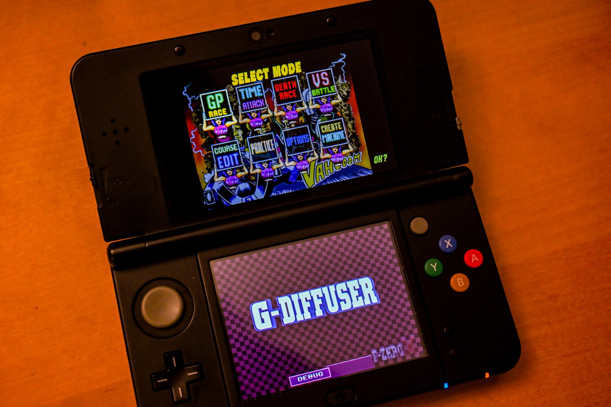
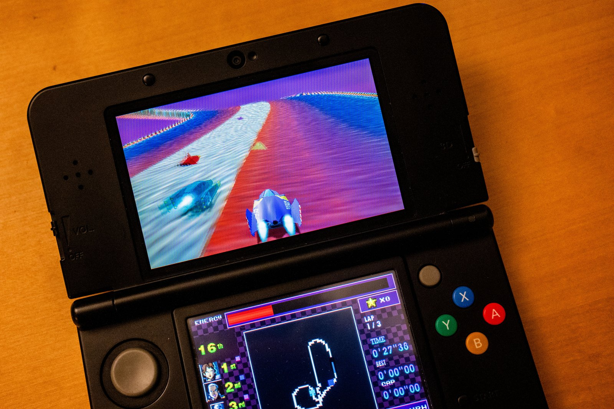

Post-mortem · New 3DS 2026-08-11 → 09-03 · Native fork 2026-09-07 → 10-19
G-Diffuser on 3DS
F-Zero X, ported from the libultraship PC runtime to the New Nintendo 3DS, reaching 59–60 fps with stereoscopic 3D, by one person directing a fleet of Claude agents over 24 days — then forked to a native renderer that also reached 59–60 fps on an Old 3DS development build, brought the 64DD Expansion Kit to the New 3DS, and added a bottom-screen dashboard, shipping as v1.0.0 (stereoscopic 3D ships as not yet a locked 60 fps on either console — see RELEASE-NOTES.md).
- Overview — What was built, in one screen
- Author's notes — The one page written by a human
- Every step — The chronology, New 3DS to v1.0.0
- Road to 60 — The New 3DS performance campaign, round by round
- The native fork — Why it exists, and what it changed
- Old 3DS — The road to a real 60 at 268 MHz
- Pushing the boundaries — Against our New 3DS build and against the field
- Difficulties — What fought back, and how it was beaten
- Frontier — What this port does that others in its position haven't
- Agentic workflow — How the fleet was run, and how the ship was steered
- Cost — Tokens, dollars, subagents
01 · Overview
F-Zero X on 3DS — Old and New, native, with the 64DD Expansion Kit
A post-mortem of porting G-Diffuser, the F-Zero X decompilation, to the Nintendo 3DS — v1.0.0, covering both the original 24-day sprint that put it on a New 3DS at 60 fps in 3D (2026-08-11 to 09-03) and the 43-day second phase that added Old 3DS support, a native renderer, and the Expansion Kit (2026-09-07 to 10-19). One person directed throughout; one long-lived Claude session orchestrated; 147 subagents built the first phase and many more carried the second.
The console went from a black screen to a native-60 stereoscopic racer, then from a New-3DS-only build to a four-way release covering both consoles with and without the 64DD expansion.
What v1.0.0 added
On hardware


The clips and photos below are from v0.9 (2026-09), before DASH replaced the debug console on the bottom screen.
 open clip
open clip open clip
open clip


What was built
Three released console builds from one source tree, all booting from the HOME menu (.cia) or the homebrew launcher (.3dsx): the base game for Old 3DS / 2DS and for New 3DS / New 2DS XL, and a New 3DS build with the 64DD Expansion Kit (course editor and machine creator, playable with a user-supplied disk image). Every build reads prebaked asset archives from the SD card — no ROM or disk image ever ships with the game.
They play the whole game: Grand Prix, Time Trial, Practice, Death Race, and the machine editor screens, with music and effects on the real DSP, stereoscopic 3D on the slider, a bottom-screen dashboard with three HUD layouts and an idle view outside races, and clean HOME suspend, resume, close, lid sleep and power-off. The New 3DS build keeps the native-60 frame pacing the first phase reached; the Old 3DS build gets to a comparable result by a different route. At v1.0.0, with no ini, both builds default to that same route: the native renderer ([perf] preset = auto). The New 3DS's first-phase render-thread/per-draw-stereo path is still built in and reachable with an explicit ini, but is no longer the default — see Frontier and Pushing the boundaries for the two builds compared side by side.
The stack
- decomp: the F-Zero X decompilation (inspectredc/fzerox), untouched upstream, plus a patch stack.
- libultraship: the N64 runtime (Kenix3), untouched upstream, including a 13-line newlib fix that lets it build on devkitARM; it still draws every menu and non-race screen.
- port/3ds: 15,039 lines as of the first phase, since grown: a citro3d rendering backend, stereo, audio, input, menu, lifecycle, render thread, profilers, packaging.
- the native renderer (added in the second phase): an owned interpreter that skips the per-frame display-list walk for race geometry, and is the v1.0.0 default on both consoles — see Frontier for how, and why it is what lets the Old 3DS keep up.
The headline numbers on hardware, first phase (New 3DS)
| When | Median | p10 | At cap |
|---|---|---|---|
| 08-14 first race (emulator) | 12–20 | – | – |
| 08-21 first hardware run | 48–50 | – | – |
| 08-28 release-grade build | ~51 | ~40 (crowds, MINIMAL) | – |
| 09-02 Round 1: Mainline before the campaign | 51.3 | 39.2 | 9% |
| 09-02 Round 2: Bridge memos (brfast) | 57.2 | 46.6 | 29% |
| 09-02 Round 3: HUD atlas · triangle memo · TMEM · audio | 56.0 | 48.0 | 32% |
| 09-02 Round 4: Render thread on core 2 (pipe) | 57.6 | 44.6 | 14% |
| 09-03 Round 5: Ahead mode · bridge on main · auto rival detail | 59.6 | 51.4 | 53% |
The first phase in five lines
- 08-11 → 08-14: from research to a race. Feasibility dossier, plan for a team of agents, five parallel foundation streams, six boot bugs, first race at 12–20 fps in the emulator.
- 08-20 → 08-22: from pink to playable, then to a real console. Fog, HUD, livery, shadow, sky fixed; the loadblock discovery took menus from 27 to 60 fps; first hardware run 08-21 ("wow it runs amazing"); audio the same evening.
- 08-27 → 08-28: product grade. Five-agent fleet drop, stereo armed, touch menu, rival detail, GPU vertex-transform moonshot built and shelved, README with legal notice, release package.
- 09-01 → 09-02: lifecycle and the last big lever. HOME crash and close-from-HOME hang fixed; a bridge output cache proven a NO-GO and replaced by memoizing each sub-display-list's classification instead of re-scanning it every frame; LOCKED-60 campaign launched with four parallel levers.
- 09-02 → 09-03: multi-core. Render thread on core 2, one-frame-ahead mode, bridge on main, auto LOD; median 59.6 with 53% of frames at cap; crash fixed; viewport placement fixed; stereo markers anchored.
The second phase in six lines
Not originally planned; it ran 09-07 to 10-19, 43 calendar days.
- 09-07 → 09-29: scoping, then making it fit. The Old 3DS milestone, previously written off, was restarted; parallel agents fit the build into its 64 MB app region (the RDRAM arena halved, audio streamed instead of resident, texture uploads capped); on 2026-09-29, in the first hardware session on a real Old 3DS, the shipped (New-3DS-era, 16 MiB RDRAM) build died at boot while the
-DGDX_3DS_O3DS=ONprofile, built to fit the console's memory grant, booted and raced the same session at about 10 fps. - 09-29 → 09-30: finding the real costs. A narrowed audio lock cut the race-wall wait on the Old 3DS by about 20 ms a frame; frame skipping ended the game's accidental slow motion; a first retained-mode renderer won big in the emulator and barely moved the number on hardware.
- 09-30 → 10-01: the probe that changed the plan. Hardware performance counters showed the real limit was instruction-cache misses, not instruction count. A pose-replay fallback was built and worked, then was set aside on the user's call: "we should go for a real 60! i still believe it has to be possible."
- 10-01 → 10-02: the native renderer. Rebuilt around the cache instead of around instruction counts, one small loop per race category, sized to fit the 16 KB instruction cache. Median frame time on a 2D Grand Prix race reached 16.5 ms.
- 10-03 → 10-08: 3D at 60, on the Old 3DS too. A per-eye resubmit with its own swap-pacing mode reached 59–60 fps in 3D on most Grand Prix courses; the heaviest courses (Silence, Sand Ocean) can still trip the frame-skip safety net to a steady 30 fps mid-race.
- 10-08 → 10-19: the Expansion Kit, a dashboard, and release. The 64DD Expansion Kit verified tick-for-tick identical under the native renderer and booted on the Old 3DS, which then proved too slow to release it on; the bottom-screen DASH shipped; a standing adversarial review audited the merged result before the v1.0.0 release.
See Agentic workflow for how the second phase was run and Old 3DS for the full campaign, card by card.
Read on
- Author's notes: The one page written by a human.
- Every step: The chronology, New 3DS to v1.0.0.
- Road to 60: The New 3DS performance campaign, round by round.
- The native fork: Why it exists, and what it changed.
- Old 3DS: The road to a real 60 at 268 MHz.
- Pushing the boundaries: Against our New 3DS build and against the field.
- Difficulties: What fought back, and how it was beaten.
- Frontier: What this port does that others in its position haven't.
- Agentic workflow: How the fleet was run, and how the ship was steered.
- Cost: Tokens, dollars, subagents.
docs/research/, the hardware logs, or the session transcripts the Cost page counts. Where a value is an estimate (the dollar figures, which apply published API list prices to exact token counts), the assumption is stated next to it.02 · Author's notes
A note from the human
Everything else on this site was written by the agent that did the work. This page was not.
03 · Every step
Step by step: twenty-four days, then forty-three more
The project ran in five bursts separated by three credit pauses. Dates are from git and the session transcripts (local time); quotes are the user's own words at that moment.
Burst 1 · Research to first race (08-11 → 08-14)
First message of the project invoked the deep-research workflow on libultraship and 3DS targeting. Verdict: New 3DS only; the Old 3DS 64 MB region cannot hold it. "new 3ds as target makes total sense".
"lets create a plan for team of agents to work. can we segment plan so we can have multiple work trees and multiple contributing agents ?" A dossier, a memory budget, a five-stream plan (A gfx, B os, C audio, D assets, E 32-bit sweep, F census) and a reviewer agent for the plan.
Contract headers, stream directories, a stub build. The libultraship carve spike proved the runtime compiles on devkitARM with a 13-line newlib patch. Phase 1 streams ran in parallel worktrees and merged in order E→B→A→D→C on 08-12 21:45.
M1 integration: the full game compiled and linked on 08-13 01:33. Then the black screens: bzero, 64DD, sdmc: path mangling, double swap, the SETTIMG low-address guard, the DMA misroute. User at 05:37, 05:42, 12:44, 13:00, 13:16: "still black screen".
"oh! i saw some random shapes briefly for the menu or something. just a white screen with a rainbow rectangle at the bottom".
Race freeze (DMA misroute) at 19:26, then a race-time death exposed as an uncaught bad_alloc (EnqueueList's worst-case reserve), fixed by capping the resource cache. "crashed again when race tried to load", "says fatal error encountered".
"omg it works ! i can race ! it looks messed up and runs at 12 to 20fps but it works!" Nine minutes later: "i didnt see any hard crashes right now, so lets see about the visual fixes. any work that can be done in parallel ?"
"lets do 1, 2, and 3. for CI though, no github actions. this will all be local for now." SMDH metadata, makerom CIA packaging, the real-hardware runbook, a local ci-3ds.sh, the user guide. Two deep-research runs: 60 fps on New 3DS, and stereoscopic 3D. The stereo foundation and GPU profiling telemetry landed the same night.
"we ran out of fable credits until next week, lets capture all the inflight tasks and store state so we can pick up the work later." A resume note was written for the next session; the fog blocker (pink road) open; three agents in flight.
A deep-research pass on Fast3D vs RT64 confirmed the renderer choice; an asset-cost shift (ETC1, decimation) was added to the plan and marked "done with opus, reconsider with fable".
Burst 2 · Playable, then hardware (08-20 → 08-22)
"can you resume from where we last left off ? we should have tokens". Fog solved at 01:57 local (per-vertex blend, not the depth LUT): the road appeared. Consolidation merge of fog + gpuprof + stereo + perf + cull.
Fleet on HUD garbage, shadow, boost, sky wedge, tunnel roof, km/h, building pop-in, CI. The measurement pass returned the CPU-bound verdict. Night session 1 while the user slept.
"sure, promote it. i dont see any large regressions. probably better".
Root cause found after eight wrong fixes: the bridge's ILP32 high-bits backstop dropping 13 SETTIMG per frame. "omg finally!!"
User demanded new methods for the remaining visual bugs; deep-research run on the fixing methods. Night session 2: S7 memos, async frame mirror, vblank skip, the env-colour flush that fixed rival-coloured machine bodies.
Sectioned profiler → per-opcode profiler → G_LOADBLOCK at 22.34 ms per frame. Fixed within the hour. 14:09: "oh dude the menu was way faster ! … blazing fast on the UI". 14:14: "oh this is awesome !!"
The .cia and .3dsx were packaged. 15:54: "wow it runs amazing ! like you were suggesting, maybe even better than the emu. sound doesn't work btw. sound has never worked on the emu either."
Eleven SD round trips. Test tone heard, then not; music on PC, then not; the wrong build blamed. Root cause: the ROM-side audio driver needed host porting and linear interpolation for the real DSP. 21:22: "working! giant win."
Race-start hitch fixed (blob preload off the audio thread), gputrace made to reach hardware, the yellow-decal ship fixed by clamping shader-clamped tiles. Hardware: median 48–50 fps, p95 58.
"agh, ran out of tokens again. lets wrap up the work for now to resume when i have fable 5 access again". Resume checkpoint 854b9d6.
"im showing this to my friend, and he is unimpressed by this port to 3DS. why is it impressive in laymans terms?" A short separate session answered it; the Frontier page is the long answer.
Burst 3 · Product grade (08-27 → 08-28)
"hi, i believe we are good to resume … feel free to spin up any necessary subagents to do parallel work." Five agents landed and batch-merged by 03:22 local: traffic grind (br 19.7 → 10.4 ms), sky wedge (padding sampling, proven with magenta), CCMUX 11, exact off-axis stereo, shadow audit.
"performance is much better! 3D works great, doesnt seem to affect performance much at all. last race did have 30fps AND had a hard crash (first time ever!)". The crash was the filelog growing without bound; fixed with the retained ring, plus the upstream combiner-key leak found the same afternoon.
Touch menu v1 with STAT/DISP/3D/AUD/INP/LOG/DBG/ABT tabs, config write-back, live setters. 19:21: "playing perfectly, full bleed should be default display mode i think". Full-bleed made the default at 15:21 local.
Then Time Trial froze on its first menu: course-select state never reset in a static non-EK build (retail relied on overlay re-DMA). Fixed 16:18 local.
Rival detail option, TRILOOP packed VBO, APT power/HOME exit fix. 04:22: "minimal appears to be a 8 to 9 fps gain ! sometimes a little more. def worth it."
GPU vertex transform built in one agent session (0e1068f): works, imperceptible on hardware, breaks the venue floor. Shelved with a report. 13:08: "visual oddity: gpuxform on, the floor outside the track loses texture mapping."
README-3DS with the legal notice (educational, no Nintendo affiliation, no ROM or assets). Bridge translation cache brief written. 13:39: "lets gather up everything to pause/checkpoint for that final push". Pause 3.
Burst 4 · Lifecycle and the last big lever (09-01 → 09-02)
Back on the next usage tier ("Fable 5.1"), the bridge cache agent found: census said 87% of commands are host-built per frame, output cache NO-GO; pivot to brfast memos, br 11.5 → 4.9 ms. Deep research on render architectures: nobody has shipped beyond the per-frame walk.
Suspend-path audit, audio park gate. Fixed 20:56 local. Combined test build staged with A/B inis and the first TEST-PLAN.txt.
"i think brfast helped with framerate … home menu came up! i was also able to return to game. but when i tried to 'close' the software it hung." Close-from-HOME root cause (sticky park event, hot spinner) fixed 10:18 local. Median 57.2 vs 56.0, p10 47.2 vs 42.0 with brfast on vs off.
LOCKED-60 campaign: Task A HUD texrect atlas, B TMEM bookkeeping, C per-triangle cost, D boot audio. All four landed by 13:40 local; staged as hwtest2.
The combined-lever HUD break (trifast without the atlas UV offset). Fixed at 14:30 local; the rule "combined-lever screenshot before staging" written. 18:59: "ok seems fine right now".
All four levers on with stereo on: median 56, p10 48, 32% at cap. Same-course A/B with trace on: steady 16.4 → 14.9 ms, crowd 20.2 → 18.7 ms. Merged to mainline.
Research 2: core 2 usable, core 3 not, no precedent for cross-core render pipelining. Agents F (dispatch census), G (boot audio 2), H (render thread on core 2). 22:11: "so curious if the multi core will be profitable!"
Burst 5 · Multi-core (09-02 night → 09-03)
Sync mode, then pipe mode forked at osSpTaskStartGo, then ahead mode (DP-done acked when the game parks). The console filter fixed the bottom-screen tab bar the user reported at 00:05 ("debug doesnt have tabs anymore").
Hardware round 3 (pipe mode): median 49 → 56, p10 42 → 48 with the trace on; stable, HOME clean, but not yet overlapping. 01:46: "got it. can you work on 2, 3, and 4 right now in parallel?" → Tasks I (bridge on main), J (auto rival detail), E (machine atlas).
Round 4 card: ahead mode + bridge on main + auto LOD, full Grand Prix, trace off.
"i did a full GP and then i poked around the menus and there was a hard crash. also, is there any way you could create a webpage with some histograms of the performance". Crash = texture cache LRU splice on core 2; fixed by render-thread ownership. The performance report page was written as a local HTML file.
User captured side-by-side screenshots against the real game: machine-select ships 1.6× too large. Viewport fold fix, verified against the references. "sorry didnt mean to interrupt but its looking good".
"one thing thats really jarring is the 1P/2P/3P markers during a race. they sit on the most foreground in 3D but the ships are somewhere in the distance". Anchored at the labeled ship's depth via the game's own prim-depth register; verified in side-by-side stereo; staged as round 5 with the crash and viewport fixes.
"lets write up a whole post mortem on this project."
State at the time of writing
Everything staged at this point shipped or was closed out in the chapters below: the pending build's ahead mode, bridge-on-main and automatic rival detail all merged, along with the texture-cache crash fix, the viewport fix and the stereo marker anchor. The GPU vertex transform stayed shelved (see Road to Sixty); the tunnel-roof bug (#27) is still open at release.
Chapter 2 · The native fork begins (09-07 → 09-23)
A feasibility pass on 09-07 inventoried what the New 3DS build actually used of libultraship's renderer and concluded the fix should start with the development loop, not the renderer: no network path to the console, no reliable frame oracle, and no desktop reference build on the machine doing the work. Over the next two weeks that loop was rebuilt (a network control and log link to the console, input-recorder determinism, a Linux reference render container) and the first renderer tier — an owned F3DEX2 interpreter replacing libultraship's — landed, along with a native track, machine, sky, HUD and effects path for races, and the first pass of the 64DD Expansion Kit on console. That work, and the chapters it enabled below, is told in full on The Native Fork; this page returns to a day-by-day account once the Old 3DS work opens on 09-24.
Chapter 3 · The Old 3DS (09-24 → 10-08)
Dates and times below are local; quotes are the user's messages to the coordinating session. This chapter's own commit and message rhythm is part of the full native-fork chart above; the per-card performance numbers are on the Old 3DS page.
The project's first deep-research verdict: the Old 3DS 64 MB region cannot hold the port.
A stale note had said the user does not own an Old 3DS; they do. Four parallel subagents work under a simulated 64 MB grant: RDRAM arena 18% used, halved to 8 MiB; audio_table streamed.
The last unattributed heap use is closed; canonical replay 49/49 under the simulated memtype=0 grant with 2.65 MiB to spare.
memtype=0Luma 6.6 / arm9loaderhax means hbmenu will not start, so every build goes as a CIA through FBI. The grant matches the simulation byte for byte; the shipped RDRAM-16 build dies in its boot preload.
RDRAM 8 build: wall p50 96 ms, GPU busy 3.6 ms. 01:00: "lets just work on this entirely. also is there anything we can do to avoid the display lists and render things in a more traditional way?"
The audio-lock wait (25.8 ms → 0.2), a single Old 3DS profile flag, the HOME freeze (the bottom-backlight session held open; found by probe apps and a bisect card), ARMv6 SIMD audio synthesis (bit-exact on silicon), the slow-motion discovery, plus flag/LOD/GPU-transform/interpreter follow-ups. 12:19: "we should working on as many in parallel".
13:13: "lets start the design agent. it can also start up subagents to do different parts. a suborchestrator if you will". A staged retained renderer design (five research and probe subagents) begins.
Frame skipping puts logic at 57–60 ticks/s, drawn 19–28 fps; draw-distance pop-in removed from the preset; draw cost measured at 10.9 µs per draw.
Deterministic boot crash. A four-title bisect card: cold size-optimised code crashes, stock boots. Code generation reverted to stock; the latent bug was never found.
"framerate in race was like 15fps ... a lot of awkward hitching". Root cause: synchronous SD log flushes, 26–270 ms on main.
Plus a research lead with five lenses and an adversarial review. All seven running agents hit the API session limit together and were resumed; later the same day the disk filled (ENOSPC) and stopped everything.
"no hitches afaik felt steadier", but the steady race window barely moved. CPU performance counters: CPI 4.34, fetch stalls 43.6%; a probe found the cliff from CPI 1.06 at 16 KB of hot code to 4.1 at 24 KB.
A pose-replay shortcut gave 40 images/s with visible artifacts and was set aside. An instruction-cache-first native race renderer starts as its own sub-effort.
"it showes mute city and then instant freeze". A verify mode had rolled back the live GPU command queue; hardware-only.
Card 2: verify mode checked 199,472 draws, 0 bad; Grand Prix 45–50 fps with log-flush hitches. Then a pre-existing bug surfaced: saves after the first never persisted (the SD rename call returned an undocumented error).
Card 3: race median 16.5 ms, 0 race hitches, save survives a power cycle. 23:22: "lets focus on 3D at 60fps".
An interim stereo configuration on the card-3 build: the native sky path consumed its section but could not draw in stereo.
"running better! looks good ... just didnt run at 60"; then "60fps for 2d for both", 3D in the 40s and 50s. The right eye is interleaved per chunk.
The weekly limit stopped the fleet; one branch's uncommitted edits were recovered on 10-07. 13:10: "ok let's proceed with as many subagents as possible for concurrency".
Mute City holds ~60 in 3D with end-mode pacing; heavier venues at 16–18 ms. "battery died on 3ds".
A VRAM-mapping change for the bottom screen put the framebuffer somewhere the CPU could not write to under a real CIA; the emulator does not enforce that mapping.
Same build with the VRAM change reverted: 3D Grand Prix race windows at 59–60 fps; verify mode 0 bad draws.
"can you start updating the postmortem doc with these new advancements / branches ?" — the request this release's post-mortem traces back to.
Chapter 4 · Shipping it (10-08 → 10-19)
Card 4 (10-08) ended the Old 3DS performance campaign at 59–60 fps (245–256 of 256 frames on the first vblank) in 3D Grand Prix races. The eleven days that followed — with a week-long rate-limit pause in the middle — finished the rest of what ships as v1.0.0: the Expansion Kit confirmed and packaged for the New 3DS (the Old 3DS build ran, too slowly to ship), the bottom-screen dashboard taken from a debug console to a real HUD, a New 3DS freeze root-caused and fixed, and the disk-streaming defaults this release ships with. Dates below are commit dates on the native-fork integration branch; this period's work is not backed by the session transcripts the earlier chapters quote directly, so this account is commit- and document-sourced rather than quoted.
The Expansion Kit gets its own HOME-menu title and its own save file, ending the last blocker to shipping it as a second, side-by-side install. Hardware cards for both consoles staged the same day Old 3DS 3D racing reached 60 fps.
A week-long gap in the commit history, the longest of the project.
The proven minimap-only bottom screen is extended into a full race dashboard: lap, position, energy, splits, best time, composited into the console's own framebuffer at well under a millisecond of CPU time. A fourth, fully custom drag-and-resize layout mode is designed and mocked up.
A forced run on the Azahar emulator, under the real 64 MB budget simulation, finds the budget can be exhausted by a single large asset load mid-race under worst-case conditions; traced to the generic archive-file loader, not any one feature. A separate real-hardware capture (heapUsed≈24.2 MB peak) suggests the margin is thin on real hardware too, though the crash itself has not been reproduced there. Left as a known limit rather than a last-minute structural fix.
The leading theory for Old 3DS audio crackle — a vblank-vs-audio-rate mismatch — is measured and ruled out on both logical and empirical grounds; a separate, smaller audio fix ships instead.
The attract-mode demo's one full-field race demo deterministically freezes a real New 3DS, with no crash dump — see The Native Fork for the root cause and fix.
The fourth, fully custom dashboard layout is set aside before release; the three fixed placement modes ship. The bottom screen also gets an idle view outside races and a DEBUG-button rename.
The Expansion Kit's 64DD disk image streams from the SD card instead of copying into RAM, and streaming becomes the default for every 3DS build; Japanese-region inputs are accepted by default, since the only retail 64DD disk is Japan-only.
Four console builds — Old 3DS and New 3DS, each with and without the Expansion Kit — from one source tree, replacing the 09-04 (v0.9.0) New-3DS-only release.
04 · Road to 60
The road to sixty
F-Zero X runs its logic at 60 Hz and the port never lowered that. Every frame the CPU walks the game's display list, translates it, and feeds the PICA. The road to 60 was the road from a 35–58 ms frame build to under 16.7 ms, measured first in the emulator and then, from 08-21, on the console. This page is that road, lever by lever.
Where the frame went: the CPU-bound verdict
The measurement pass of 08-20 settled the strategy. GPU drawing time was flat at 0.4 ms per frame and the loop never once waited on the PICA; CPU build time was 26 to 58 ms. Fill rate, model decimation and texture compression were struck from the plan as irrelevant to frame time (the whole race used 8 KB of texture bytes and 957 vertices per frame). The bottleneck was the software display-list interpreter and the bridge that feeds it. Every lever from then on attacked CPU time, and every profile was reported as a set of named buckets:
| Bucket | What it is |
|---|---|
br | the bridge pre-pass: converting the game's raw display list into the runtime's command form, resolving addresses |
dsp | interpreter dispatch: walking the converted list and executing every command |
vtx | vertex transform: projecting N64 vertices to clip space on the CPU |
tri | per-triangle work: tile extents, shader lookup, clip parameters, packed VBO emission |
imp | texture import: looking up or uploading textures for a draw |
drw | issuing the draw to citro3d, including the stereo target switch |
The emulator era: 08-14 → 08-21
Before the console arrived every number was an Azahar proxy, known to be pessimistic on menus and unrepresentative in absolute terms. The shape of the work still held.
| Date | Lever | Measured (emulator) |
|---|---|---|
| 08-14 | First race | 12–20 fps race, 15–20 fps menus, debug logging on |
| 08-20 | Frame pacer double-throttle fix, HLE audio producer to core 2, malloc histogram | measurement pass: CPU 26–58 ms vs GPU 0.4 ms |
| 08-21 | Loadblock discovery. Per-opcode profiler named G_LOADBLOCK at 22.34 ms per frame: each 4 KB load did 512 shared_ptr copies (a thousand atomic RMWs), a 4 KB memcpy and a live getenv | F3 22.34 → 2.21 ms; dispatch 27.6 → 8.9 ms; menu wall 35–38 → 16.7–19.9 ms. User: "blazing fast" |
| 08-21 | Flat dispatch table replacing libultraship's layered handler tables | neutral on time, enabled per-opcode profiling |
| 08-21 night | S7 interpreter memo (raw dispatch, geo-diag gate, tri-state memo), async frame-mirror copy, vblank-stall skip, upload thrash 155 → 0.5 per frame, resolutions 93 → 0 | menu 15 → 19.9 fps; race build 26–58 → 24–46 ms; title wall 34 → 21–27 ms |
| 08-21 | Texrect state fast path (batch same-state runs) | E4 texrect bucket 6–9.7 ms attacked |
Hardware, before the campaign: 08-21 → 08-28
| Date | Build | Hardware result (user + log) |
|---|---|---|
| 08-21 | First .cia and .3dsx, rspolish | 35–55 fps; median 48–50, p95 58, max 59 over 8 races; crowd dips 25–35. "wow it runs amazing" |
| 08-27 | Fleet drop: traffic grind (bridge region cache, binary-search asset lookup, pipesync no-op), sky wedge, CCMUX 11, stereo armed, shadow | "performance is much better! 3D works great, doesnt seem to affect performance much at all"; one hard crash (filelog OOM, fixed same day) |
| 08-28 | Touch menu, full-bleed display, rival detail option, triloop packed VBO, leak fix (upstream LUS bug) | median 51, p95 60, max 60; MINIMAL rival detail = +8–9 fps in crowds, floor ~40 (was 25–35) |
| 08-28 | GPU vertex transform moonshot | imperceptible on hardware; venue floor loses texture mapping (24-bit uniform precision). Shelved. |
The LOCKED-60 campaign: 09-01 → 09-03
Five hardware rounds in three days, each a staged branch with a test plan, each measured from the console's own once-per-second fps beats in the log. Stereo was accidentally off in rounds 1 and 2 and on from round 3, which makes the later gains larger than they look.
| Round | What it carried | Conditions | Beats | Median | p10 | At cap |
|---|---|---|---|---|---|---|
| Round 1 | Mainline before the campaign | stereo off · trace off | 754 beats · 63 min | 51.3 | 39.2 | 9% |
| Round 2 | Bridge memos (brfast) | stereo off · trace off | 78 beats · 6.5 min | 57.2 | 46.6 | 29% |
| Round 3 | HUD atlas · triangle memo · TMEM · audio | stereo on · trace off | 237 beats · 20 min | 56.0 | 48.0 | 32% |
| Round 4 | Render thread on core 2 (pipe) | stereo on · trace off | 58 beats · 5 min | 57.6 | 44.6 | 14% |
| Round 5 | Ahead mode · bridge on main · auto rival detail | stereo on · trace off · full GP | 229 beats · 19 min | 59.6 | 51.4 | 53% |
Where the milliseconds came from
Hardware profiles with the trace on (which itself inflates the numbers by a few milliseconds) on the same course, crowd windows (30 machines in view) and steady windows. Buckets in milliseconds per frame.
| Profile | Window | br | dsp | vtx | tri | imp | drw | Total |
|---|---|---|---|---|---|---|---|---|
| Campaign levers off control, same course | crowd | 2.96 | 8.26 | 1.12 | 5.58 | 0.78 | 1.48 | 20.2 |
| Campaign levers off control, same course | steady | 2.2 | 7.63 | 0.66 | 3.98 | 0.76 | 1.18 | 16.4 |
| Campaign levers on atlas · tri memo · TMEM · brfast | crowd | 3.07 | 7.84 | 1.18 | 4.64 | 0.78 | 1.24 | 18.8 |
| Campaign levers on atlas · tri memo · TMEM · brfast | steady | 2.17 | 7.35 | 0.65 | 3.22 | 0.72 | 0.79 | 14.9 |
| Render thread (pipe) core 2 renders, main waits | crowd | 3.12 | 4.89 | 1.01 | 4.21 | 0.68 | 1.16 | 15.1 |
| Render thread (pipe) core 2 renders, main waits | steady | 2.72 | 3.87 | 0.7 | 3.12 | 0.66 | 0.95 | 12.0 |
Every lever, and its verdict
| Lever | Idea | Measured | Verdict |
|---|---|---|---|
| Loadblock span store | One record per 4 KB load instead of 512 shared_ptr copies; same-content skip; getenv latch | F3 22.3 → 2.2 ms, dispatch 27.6 → 8.9 ms (emu) | mainline |
| Flat dispatch + [prof]/[profop] | Plain table dispatch; per-bucket and per-opcode timers | neutral; enabled everything after | mainline |
| S7 interpreter memos | Raw-pointer dispatch, gated geo diagnostics, tri-state memo | build 34 → 23.5 ms (emu); one 2× regression bisected out (dlcache) | mainline |
| Async frame mirror, vblank-stall skip | Menus stop waiting on a copy and on a late vblank | menu 15 → 19.9 fps; wVbl 10–16 ms → 0 (emu) | mainline |
| Texrect fast path | Batch same-state rectangle runs | E4 bucket attacked; superseded by the HUD atlas | mainline |
| Traffic grind | Bridge region cache (no svcQueryMemory per probe), binary-search asset lookup, pipesync no-op | br 19.7 → 10.4 ms, wall 55.7 → 46.7 ms (emu) | mainline |
| Prim/env value-change flush | Correctness first: flush on colour change | fixes machine tint; small cost | mainline |
| Rival detail (NATIVE/REDUCED/MINIMAL) | Bias the game's own LOD tiers for non-player machines beyond the 5 nearest | +8–9 fps in crowds on hardware | mainline |
| Triloop packed VBO | Single-write PICA-layout emission from the interpreter | kills the double vertex copy | mainline |
| Leak fix (uninitialised ColorCombinerKey::shader_id) | Upstream LUS bug: combiner map missed per draw | heap flat; hidden per-draw flush tax gone | mainline |
| Double-height stereo target | One 400×480 target, per-eye viewport, fewer PICA flushes | user observed 2D ≈ 3D on hardware; citro3d source says flush cost is GPU-side and the GPU idles | shelved |
| GPU vertex transform (moonshot) | Unlit vertex transform on the PICA vertex shader | works (220 k draws, zero fallback, −62% vtx emu); imperceptible on HW; 24-bit uniform precision breaks ±32000-unit floors | shelved |
| Bridge output cache | Cache converted display lists across frames, epoch-validated | census: 87% of walked commands are host-built per frame; ceiling ~1.5 ms | NO-GO |
| brfast (bridge memos) | Per-list facts memo, address-resolve memo, placeholder/raw-copy/range-class memos | br 11.5 → 4.9 ms (emu); HW br 6.43 → 3.73 in crowds; median 56.0 → 57.2, p10 42.0 → 47.2 | mainline |
| HUD texrect atlas (trectbatch) | Pack HUD rectangles into atlas pages; batches stay open across views | crowd draws 136 → 26 (E4 −2.6 ms emu) | mainline |
| trifast | Fast packed triangle loop; found the S7 memo had never actually hit (flag bug) | tri −15..−19% (emu); HW tri 5.58 → 4.64 ms crowd | mainline |
| tmemfast | TMEM load bookkeeping | F3 −22..−35% (emu) | mainline |
| audioprime / audioprime2 | Boot audio underrun: title font sample load blocked on a 10.7 MB inflate | store audio_table uncompressed in the o2r: preload 4.3 → 1.97 s | mainline |
| dspfast (batch-break fold) | Fold prim/env changes to avoid batch splits | census: texture switches split anyway; cannot pay | default off |
| Machine texture atlas (atlas3d) | Atlas machine-part textures to cut switches | only ~21 imports per frame split a batch; 0.1–0.5 ms best case; two thirds of machine textures wrap or mirror | default off |
| Render thread, core 2 (mode 1, pipe) | Interpreter and draws on core 2, forked at osSpTaskStartGo | HW: stable, HOME clean; median 49 → 56, p10 42 → 48 (trace on); not yet overlapping (waitMain 10–15 ms) | mainline |
| Render thread mode 2 (ahead) | DP-done acknowledged when the game parks; 2-deep backpressure; true one-frame pipeline | HW round 5: median 59.6, p10 51.4, 53% at cap | mainline |
| Bridge on main (bridgemain) | Bridge pre-pass runs on core 0 while core 2 renders | render-thread br 4 → 0 ms; brMain 3.6 ms; balanced cores | mainline |
| Auto rival detail (dynlod) | Raise the LOD tier when render > 15 ms, lower when < 12 ms; user setting is the floor | shipped in round 5; thresholds untuned on HW | mainline |
| Render-thread-owned texture cache | Fixes the round-5 data abort: clears become requests drained on the render thread | receipt texcacheMainMut=0; awaiting HW | mainline |
What is left
Round 5 is the last measured state: 53% of beats at the cap and a median a hair under 60. The floor is still the crowd start. The remaining known levers, in the order the research ranked them: double command buffers on the render thread (CPU build and GPU are still serialised on core 2), a texture import-lookup memo (imp 0.7 ms, 83 imports per frame), tuning the auto-LOD thresholds against hardware, and, if ever wanted, GPU vertex transform phase 2 on lit machine geometry with a large-coordinate CPU fallback.
Where the road went next
None of the above levers reached the Old 3DS, which has no second render core, no L2 cache, and a third of the clock. Starting 09-24, a second performance campaign rebuilt the race-frame renderer around that console's instruction cache instead of its instruction count, and an internal development card reached 59–60 fps (245–256 of 256 frames on the first vblank) in 3D Grand Prix races by 10-08. v1.0.0 ships that same renderer lever family on by default on both consoles via [perf] preset = auto — no ini editing needed. That campaign, card by card, is on Old 3DS: the road to a real 60; the renderer work that enabled it is on The Native Fork.
05 · The native fork
The native fork: six weeks, a second console
The New 3DS chapter ended on 09-03 with the game running through libultraship's Fast3D interpreter: every triangle translated and lit on the CPU, one display-list command at a time. Starting 09-07, that path was replaced, piece by piece, with code that talks to the PICA200 GPU directly — not because the interpreter was slow in the abstract, but because it was the only way to also reach the Old 3DS. This page is that fork: why it started, what it replaced, and the four features it shipped with by 10-19: Old 3DS support, the 64DD Expansion Kit on the New 3DS, a bottom-screen dashboard, and a fixed New 3DS freeze.
Why fork the renderer
A feasibility pass on 09-07 inventoried what the 3DS build actually compiles from libultraship: 36 files, 15,043 lines. Of those, one thing dominates: the Fast3D interpreter itself (interpreter.cpp, 10,466 lines in that pre-fork snapshot — F3DEX2 and RDP opcodes, RSP transform-and-light on the CPU, texture cache, the combiner). Outside that 36-file total, but just as central to a race frame, sits a separate 12,353-line bridge whose only job is to widen the game's 32-bit display-list words into the 64-bit words the interpreter wants. Everything else libultraship provides on 3DS — window, audio, input, config, GUI — was already replaced by this port's own glue code; graphics was the one piece still routed through someone else's CPU-side renderer.
A census — a short pass that counts how existing code already does something, before deciding whether a lever is worth building — found machine meshes, the track, and effects/HUD each drawn a different way, which pointed to a hybrid opportunity rather than a clean rewrite: the table below has the detail. The long tail — menus, the course editor, the ending, one-off screens — stays on an interpreter forever, because translating all of it would cost more than it returns. The fork is therefore a hybrid renderer: an owned interpreter for everything, plus three race-only paths that bypass it for the things a race frame actually spends its time on.
| Tier | What it does | Status at release |
|---|---|---|
| Tier 1 — own the interpreter | A purpose-built F3DEX2 → citro3d walker reads the game's display list directly, replacing libultraship's interpreter and its bridge. Same pixels, no 32→64-bit conversion pass. | Shipped and on by default on both consoles (see the preset note below); an explicit [perf] preset = off switches back to the exact prior libultraship path. |
| Tier 2 — bypass it for races | track replays the course tessellator's vertex stream straight into a GPU buffer; machines draws the racers from baked, retained lists; the HUD, effects and shadows batch into sprite passes. Together this is the native race renderer (NRR). | Built and on by default on both consoles. On Old 3DS hardware an internal development card held 59–60 fps in Grand Prix races with the 3D slider up (see Old 3DS) — that card, not the shipped v1.0.0 binary, so it isn't a hardware-confirmed figure for this release's own 3D mode (see the release note below). On New 3DS the same default also turns the core-2 render thread off in favour of the NRR's sequential host loop — the two are mutually exclusive by design (see Pushing the Boundaries) — and that stack is verified in the emulator and exercised on real hardware during the title-screen freeze fix below, but still awaits its own dedicated New 3DS hardware verification pass for full races. |
Every individual lever is still an ini killswitch that compiles to off, with a verify mode that draws both paths and compares the packed vertex bytes bit for bit before trusting the new one — that discipline is why a two-console fork stayed tractable, since a regression on one model shows up as a byte mismatch, not a maybe. What changed for release: a no-ini player no longer sees that off default. [perf] preset defaults to auto, which resolves per console at startup — n60 on New 3DS, the matching o3ds-auto table on Old 3DS — and switches the whole race-frame lever set on out of the box. An explicit ini key always wins, so preset = off is the one-line escape hatch back to every lever's compiled-off default.
Fixing the dev loop before forking
The 09-07 plan explicitly delayed the renderer work by about two weeks to fix the development loop first: every iteration to that point meant a human carrying an SD card between a Mac and a console, and a renderer rewrite is a differential-testing problem — the new path has to match the old one pixel for pixel before it is allowed to be faster. The fix added a network path to the console: a control listener (TCP 17492) that accepts a new build, writes it to the SD card, and relaunches the app through the Homebrew Launcher's own reload hook, plus a log link (TCP 17491, the same protocol 3dslink -s already speaks) that streams the console's log back live. One Y-button press on the Homebrew Launcher per power-on was enough; after that the console reloaded builds on its own. By release, a 3dslink launch turns this network link on by default, alongside the bottom-screen dashboard described below.
Native track, machines, sky, HUD and effects
Each race-frame category got its own small, specialised loop instead of a general-purpose interpreter pass:
| Category | What changed |
|---|---|
| Track | The spline tessellator's per-frame vertex stream is written straight into a GPU-resident buffer instead of being walked and translated command by command. |
| Machines | The 30 racer meshes are retained on the GPU and redrawn from baked lists, instead of being re-submitted as fresh display-list commands every frame. |
| Sky | A small per-frame vertex path, kept resident where the scene allows it; the one category that needed explicit stereo and fallback handling of its own (see the New 3DS section below). |
| HUD and effects | Texture-rect sprites (HUD gauges, particle effects) batch into atlas pages instead of one draw call per rectangle. |
| Shadows | Folded into the same batched pass as the effects sprites. |
Each phase of a race frame — the shared core, one category, and the vendored GPU-command path underneath — is also sized to fit inside the CPU's 16 KB instruction cache, the single biggest lesson of the Old 3DS phase below: code that does not fit in L1-I pays for it on every fetch, regardless of how few instructions it runs.
A real 60 on the Old 3DS
The Old 3DS was ruled out on day one of the whole project (08-11): its 64 MB application region was judged too small. The native fork revisited that from 09-24, and by 10-08 it held 59–60 fps (245–256 of 256 frames on the first vblank) in Grand Prix races with the 3D slider up, on a console with no L2 cache and a third of the New 3DS's clock. That campaign — the memory fit, the instruction-cache cliff that explained why emulator wins did not transfer, and the race-by-race hardware numbers — is its own page: Old 3DS: the road to a real 60.
The Expansion Kit, shipped on the New 3DS
The 64DD Expansion Kit — the course editor, the machine creator, and the extra 64DD disk content — runs as its own build, "G-Diffuser EK", with its own HOME-menu title and its own save file (saves/fzerox-ek.sav) and logs (log-EK.txt), so it installs side by side with the plain build on the same SD card without either one touching the other's save. It needs the user's own retail Japanese 64DD disk image (a fan-translated English image froze at boot in release testing, so it is a known issue); without one, the game boots and plays normally and the EK-only menu entries simply don't open.
Two things changed late for this release, both in the disk path: the disk image streams from the SD card instead of being copied into RAM (a 62 MB saving), and disk_stream now defaults to its full-streaming mode (2) for every 3DS build rather than being an opt-in flag. Japanese-region inputs are also accepted by default, since the only retail 64DD disk is Japan-only. A first boot with a disk image does a roughly one-minute whole-image integrity pass once and remembers the result for next time.
The Expansion Kit was verified against the plain game under the native renderer and found to fit the Old 3DS's tighter memory budget with a comparable margin, but on Old 3DS hardware it ran too slowly to release (64DD courses stutter, disk music breaks up, the editors crawl), so it ships for the New 3DS only; see Old 3DS: the road to a real 60 for the tick-exact verification numbers and the two drawing defects found and fixed along the way.
The bottom screen: DASH
The 3DS's second screen started this project as a debug console. Through the native-fork chapter it became a proper race dashboard (DASH): the same information the top-screen HUD shows — lap, position, energy, split and best times, the minimap — composited directly into the console's own bottom-screen framebuffer rather than drawn through the GPU, so it costs under a millisecond of CPU time per frame and does not touch the render thread's budget at all. Three placement modes are available, cycled with a touch-screen chip or a SELECT long-press: HUD elements all on the top screen (closest to the original game), split between both screens, or all moved to the bottom screen. Outside a race the bottom screen shows an idle view instead; the DEBUG button opens the same settings and log console the screen always had. In 2–4 player races the HUD is forced to the top screen, since the bottom screen is one shared surface.
A fourth mode — a fully custom, on-device drag-and-resize layout editor for the dashboard — was prototyped but shelved before release; the three fixed layouts above are what ships. One cosmetic defect is known and left alone rather than chased further: the speed readout can briefly show an implausible number — as high as ~826 KPH — in the single frame right at a race's finish line.
The New 3DS freeze
Late in this chapter, a real New 3DS froze — not crashed, froze, with no crash dump and no log line — every single time the title screen's attract-mode demo cycle reached its one full-30-machine race demo. The emulator never reproduced it in repeated multi-minute runs, which argued for a genuine hardware timing issue rather than a logic bug.
Bisection on the console (not the emulator) found the cause: the GPU command buffer that the native renderer and its vendored graphics path both write into was sized the same on both consoles, and a full 30-machine race frame sits right at that buffer's edge on New 3DS. With one specific lever disabled, the same frame instead hit a clean, bounds-checked panic in the buffer writer at the identical point — the strongest evidence available that the freeze and the panic are two code paths tripping over the same undersized buffer, though it doesn't by itself prove they're the identical bug.
The fix doubles the buffer on New 3DS, which has the RAM margin to spare (the size multiplier goes from 2x to 4x the citro3d default), and adds a durable log line the moment any future overflow is about to happen, so a recurrence would be diagnosable from the log alone. Four separate real-hardware boot sessions through the exact frame that used to freeze every time came back clean afterward. The same review re-measured the Old 3DS's own buffer and found it already running tight (70% of capacity on the emulator, by this project's own margin for "raise it"); it got the same doubling, 2x to 4x, on the logic that the New 3DS case had just shown an emulator reading can understate a real console's margin.
Release: v1.0.0
The native fork's work ships as three console builds from one source tree: the plain game for Old 3DS and for New 3DS, and an Expansion Kit build for New 3DS (an Old 3DS Expansion Kit build compiles but is not released). Which performance profile runs is decided at startup by asking the console what it is, not by which binary was installed — an Old 3DS build on a New 3DS still gets the New 3DS settings, but the reverse does not fit the memory budget and is not supported. All of them share one SD-card folder for settings, save data and media. The native race renderer ships on by default on both consoles — a no-ini [perf] preset = auto resolves to each console's own tuned lever table, so a player does not need to write any ini lines for performance. Verification depth still differs by console and by feature: the native draw paths themselves are extensively hardware-tested on Old 3DS; on New 3DS they are verified in the emulator and exercised on real hardware during the freeze fix below, but still await a dedicated New 3DS hardware frame-rate pass for full races (see the Tier 2 status above). Stereoscopic 3D is a separate, narrower claim: it is on by default on both consoles, but the 59–60 fps figure above is from an internal development card, not the shipped binary, so it isn't yet a hardware-confirmed locked 60 on either console (see RELEASE-NOTES.md and STATUS.md).
| Known at release | What it means |
|---|---|
| Stereoscopic 3D not yet a locked 60 fps on either console | 3D plays on by default on both consoles, but the 59–60 fps figure in the Tier 2 row above is from an internal development card, not the shipped binary — no hardware-confirmed 3D frame rate for v1.0.0 yet (see RELEASE-NOTES.md / STATUS.md) |
| A rare speed-readout spike (as high as ~826 KPH) at the finish line | Cosmetic; the bottom-screen DASH only, noted above |
| Brief audio gaps during loads | Short, occasional; not the crackle hypothesis this chapter investigated and refuted |
| The Old 3DS has a memory ceiling | Reproduced on the Azahar emulator under the real 64 MB budget simulation, not yet on real Old 3DS hardware: a single large asset load during a race can exhaust the budget under worst-case conditions. A separate real-hardware capture (heapUsed≈24.2 MB peak) suggests the margin is thin on real hardware too |
| Not every mode is hardware-tested on every model | The game has been played on real hardware throughout this chapter, but coverage favors the modes exercised most during development |
The day-by-day account of this chapter — including the parts that did not work on the first try — continues on Every Step; the hard problems it fought through are catalogued on Difficulties.
06 · Old 3DS
Old 3DS: the road to a real 60
On 08-11 the first feasibility study said this port was New 3DS only: the Old 3DS memory region could not hold it. Six weeks later the same game boots on an Old 3DS (268 MHz, no L2 cache), races at about 10 fps, and eleven days after that an internal development card holds 59–60 fps (245–256 of 256 frames on the first vblank) in Grand Prix races with the 3D slider up — on an internal development card, not the shipped v1.0.0 build. v1.0.0 now ships that same lever set as its default, but a separate real-hardware confirmation pass for the shipped binary's own 3D frame rate has not been done; see the note below and RELEASE-NOTES.md / STATUS.md for the current, authoritative status. This page is that road, card by card, with the number each hardware run actually logged.
[perf] preset = auto resolves to the Old 3DS's own tuned table (native renderer, NRR and stereo all on, plus the memory-fit levers card 4 still set by hand), so the same lever family card 4 ran by hand is now the default — see The native fork for how the per-console default resolves. What is not yet true: a separate real-hardware pass confirming the shipped v1.0.0 build's own 3D frame rate has not been run. The current, authoritative status is in RELEASE-NOTES.md, Known issues ("Stereoscopic 3D plays but isn't yet a locked 60 fps on either console") and STATUS.md's stereoscopic-3D row ("plays, not yet a locked 60 fps, exact hardware figure not confirmed for this release"). An explicit [perf] preset = off reverts to the legacy interpreter.The machine
| Old 3DS | New 3DS | Source | |
|---|---|---|---|
| ARM11 cores, clock | 2 × MPCore at 268 MHz | 4 × MPCore, up to 804 MHz | 3dbrew: Hardware |
| L2 cache | none | 2 MB ("optional" per 3dbrew) | 3dbrew: Hardware |
| L1 instruction cache | 16 KB per core; a miss costs ~37 cycles per 32-byte line (measured) | not measured here; misses can be served from L2 | hardware profile, below |
| Memory for the app | 64 MB application region (memtype=0); default heap grant 24 MiB | 124 MB app mode | boot log [mem-budget]; see Difficulties |
| Cores the port can use | core 0; core 1 is a 30% time-limited share (audio lives there) | core 0 + core 2 (render thread) | hardware profile, below |
[mem-budget] line: model=old3ds memtype=0 app=67108864 heapGrant=25165824.Every card, every number
A "card" is one SD-card round trip: a build, an ini, a written test plan, the user's play session, and the log back. The Old 3DS runs Luma 6.6 on arm9loaderhax, so the homebrew launcher does not start and every build went over as a CIA installed through FBI. There was no network loader for this phase; each row below is a physical trip.
| Date | Card | What it carried | What the hardware said | Log / doc |
|---|---|---|---|---|
| 09-28 | Shipped build (RDRAM 16) | The released New 3DS build, unchanged, installed as a CIA | Dies in the boot preload: [fatal] operator new failed size=175844 heapFree=32424. Console answers memtype=0, heap grant 24 MiB (25,165,824 B) | hw-first-boot-0928 |
| 09-29 | First boot (RDRAM 8) | -DGDX_3DS_RDRAM_MB=8, audio_stream=1, tex_upload_kb=512; legacy interpreter (native all=0) | Boots and races. Wall p50 96.0 ms (p10 88.7, p90 111.3); GPU busy 3.6 ms; oth 37.3 ms. User: "it ran ! at like 9fps" | hw-rdram8-0929 |
| 09-29 | C4 run 1: O3DS profile | -DGDX_3DS_O3DS=ON (RDRAM 8 MiB + 16 MiB linear pin: 38.9 MB heap), owned interpreter all=1 interp=1 | GP wall 88 ms (11.3 fps), TT/menu 43.7 ms; aud 25.8 ms = audio-lock wait, confirmed on hardware | hw-c4run1-0929 |
| 09-29 | C4 run 2: narrow audio lock | audio_ctx_narrow=1 | aud 25.8 → 0.2 ms; race wall 67.8 ms (14.7 fps), light scenes 40 ms | hw-c4run2-0929 |
| 09-29 | Wave 2: HOME + audio SIMD | HOME bisect builds; audio_simd verify | HOME freeze root cause isolated (bottom backlight session); 7/7 HOME resumes with screen on; audio_simd verify 391/0/0, 0 mismatches on silicon | hw-wave2-0929 |
| 09-29 | Wave 3: frameskip + O3DS preset | frameskip=auto, preset=o3ds, gpuxf=1, DrawProbe calibration CIA | Logic 57–60 ticks/s (game at full speed for the first time); drawn 19–28 fps in races. User: "playable but nausea inducing". DrawProbe: 10.9 µs CPU per draw, 14 Mtri/s | hw-wave3-0929 |
| 09-29 | REL1 | All C5 stage-1 levers + O3DS code generation (cold -Os, hot-first order) | Boot crash, deterministic. Four-title bisect: cold -Os crashes, stock and -O2+order boot | hw-rel1-fail, hw-rel1b-fail, hw-rel1crash-bisect |
| 09-30 | REL2 | Stock codegen, frameskip=steady, HUD/machine/track retained paths | Boots. Race ~15 fps rendered (steady stuck at D=4), rw50 26–35 ms, "lots of awkward hitching": synchronous SD log flushes of 26–270 ms on main | hw-rel2 |
| 09-30 | REL3 | Every exact lever on, async file log, overlap kick | "no hitches, steadier"; steady mostly D=3 (20 fps rendered), rw50 24–36 ms | hw-rel3-run1, hw-rel3-run2 |
| 09-30 | HWPROF B | PMU counters (c5pmu) and the r60 probe | Render CPI 4.34, 43.6% of cycles in instruction-fetch stalls; probe CPI 1.06 at 16 KB of hot code, 4.10 at 24 KB, 5.62 at 32 KB | hw-hwprof-B |
| 10-01 | REL4 | + pose replay (C6), compact HUD/sky emitter | 20 rendered + 20 replayed images/s, 1.3 ms per replay, but sky jitter, black tearing edges, giant fx triangles. 26.8 ms CPU per rendered frame. User: "we should go for a real 60!" | hw-rel4 |
| 10-01 | n60-m1 (NRR milestone 1) | Native race renderer: HUD, track, machines, sky; nrr_direct=2 verify run | Hard freeze at race start. Cause: verify mode's state save/restore rolled back libctru's live GX queue (the emulator's GSP completes synchronously and cannot show it) | hw-n60m1-V |
| 10-02 | n60-card2 | All seven NRR categories (+ shadows, fx, dressing), GX-queue fix | RUN V: 199,472 draws verified, bad=0, float24 max 0.011 px. RUN C: TT "silk 60 fps"; GP W median 14.2 ms = 57.3 fps outside log-flush windows (51.9 fps all windows), harsh hitch every ~1/5 lap | hw-n60card2-V, hw-n60card2-C |
| 10-02 | n60-card3 | Never-blocking log, frameskip=race0, save fix, swap gate, texture fixes, HUD memo, native tunnel joins and decorations | Race median 16.5 ms, 0 race hitches; save persisted across a power cycle. User: "omg it ran amazing!" | hw-n60card3 |
| 10-03 | interim legacy 3D | card-3 build + [stereo] enabled=1 (NRR refused stereo, legacy path) | Black sky: the NRR sky consumed the section but could not draw under stereo | hw-interim3d |
| 10-03 | n60-3d | Stereo on the NRR: one frame body, resubmitted for the right eye with a per-eye uniform | No glitches; 3D race ~19.8 ms vs 16.5 ms 2D (frame-begin GPU wait 6.6 vs 3.3 ms) → 33 ms quantum, cost guard flapping, ~40 fps | hw-n60-3d |
| 10-03 | n60-3d2 | Right eye interleaved per submitted chunk | 2D 60 in GP and TT. 3D "40s and 50s": every race tripped the guard in the intro; steady 3D GP ≈ 48–57 fps | hw-n60-3d2 |
| 10-07 | n60-3d3 | End-mode swap pacing in 3D, intro HUD fix, 1 Hz menu refresh fix, launch variants | Mute City 3D ~60 in end mode (hold 1 on 250–255 of 256 frames); Silence and Sand Ocean heavier (work 16–18 ms) | hw-n60-3d3 |
| 10-08 | n60-3d4 | + track merge, per-draw diet, prewarm, HUD compile, FINISH mesh, lcd_vram=1 | Crash at boot on all three variants, no log: LCD framebuffers in VRAM, which the CIA maps read-only for the CPU | hw-n60-3d4 |
| 10-08 | card 4 (VRAM fix) | Same build, two levers off in the SD ini | 3D GP courses 12–16: race windows hold 1 on 245–256 of 256 frames at work ≈15.5 ms → ≈59–60 fps. VERIFY variant bad=0. Heavy windows only on the post-race results table | hw-n60-3d4b1 |
Phase 1 · Make it fit (09-24 → 09-29)
The Old 3DS milestone had sat unstarted on a stale note that said the user did not own one; corrected on 09-24. Four parallel subagents, then a fifth, worked under a simulated memtype=0 grant. The N64 RDRAM arena turned out to be 18% used and was halved to 8 MiB; audio_table moved off the heap behind a stream; texture uploads were capped. By 09-25 the canonical replay passed 49/49 under the simulated grant with 2.65 MiB of heap to spare. On 09-28 the real console answered memtype=0, byte-identical to the simulation, and the shipped build died in its boot preload exactly as predicted. One build flag, -DGDX_3DS_O3DS=ON (RDRAM 8 MiB plus a 16 MiB linear-heap pin, a 38.9 MB heap), became the Old 3DS profile; the New 3DS binary stays cmp-identical.
Phase 2 · Find the costs (09-29 → 09-30)
The first race spent 96 ms per frame with the GPU busy for 3.6 ms of it. The parallel wave that followed split the unattributed "other" bucket (it was the game thread waiting on the audio mutex while the HLE synthesiser held it: 25.8 ms per frame, cut to 0.2 ms by narrowing the lock), made the synthesiser 2.2× cheaper with bit-exact ARMv6 SIMD kernels (verified on the console, 0 mismatches), and found that the game was running in slow motion: one logic tick per drawn frame, Grand Prix at roughly 22–25% speed. Frame skipping (an automatic mode, then an even-cadence "steady" mode) put the game at full speed and made it "playable but nausea inducing".
A staged retained-mode renderer followed (per-category timers, GPU-resident machines, batched HUD/shadows/fx, a resident track with float24-safe rebasing, overlap of CPU and GPU), each lever exact against the interpreter. Every stage won in the emulator. On hardware, the third stage moved almost nothing: a steady race window stayed at 24–36 ms against the second stage's 26–35.
Phase 3 · The probe that changed the plan (09-30 → 10-01)
A performance-counter instrumentation pass put the ARM11 hardware counters in the build. The answer explained why the emulator wins did not transfer: the emulator does not model the instruction cache, and the renderer's cost on the console was mostly fetching code. The track, the one category whose levers had paid, was the one with the fewest I-misses per instruction: a few tight loops. The HUD ran 284 k instructions per frame at one I-miss every 17 instructions.
Two answers were on the table. A research pass (five lenses and an adversarial review) had concluded on 09-30 that a native 60 was "marginal for the 1P GP race" and proposed pose replay: re-submit the last frame with the skipped tick's poses ("60 Hz motion"). It was built, worked on hardware at 40 images per second, and showed sky jitter, tearing edges and broken particle trails; it was set aside. On 10-01 the user wrote "we should go for a real 60! i still believe it has to be possible."
Phase 4 · The native race renderer (10-01 → 10-02)
The renderer was redesigned around the cache, not around instruction counts. In races, each category (HUD, track, machines, sky, dressing, effects, shadows, decorations) runs one small specialised loop over a compact snapshot of game state and writes precomputed PICA200 command words directly into the GPU command buffer, drawing from GPU-resident meshes. The game's display-list sections for those categories are not built on rendered ticks at all. Each phase of the frame (core, one category, and the vendored citro3d path) is sized to fit the 16 KB L1-I: 9.1–11.0 KB per phase on card 2; the HUD phase reached 16,164 of 16,384 bytes on card 4. Game logic is untouched and checked by a game-state hash identical on every tick; pixels are held to a tolerance (2D: Δ>8 on ≤0.05% of pixels).
Phase 5 · 3D at 60 (10-03 → 10-08)
The first native-renderer builds refused stereo. The legacy path draws each eye per draw (in the emulator +0.77 ms per frame), which would have put back per-draw CPU work the native renderer had just removed. The fix builds the frame body once and resubmits the recorded command stream for the right eye, with the shader skewing clip x by a per-eye uniform and a per-draw stereo class (scene, anchored, deep sky, or none for UI). The emulator cost was +0.047 ms per frame against +0.77 for legacy per-draw stereo. On hardware the CPU fit, but the frames missed vblank: citro3d requests the swap only when the whole GX queue drains, and a whole right eye queued after frame end is a 5–7 ms tail. Interleaving the right eye per submitted chunk and swapping in end mode closed it: Mute City at ~60 in 3D on 10-07, Grand Prix race windows at 59–60 on 10-08.
What was still open at card 4, and what happened after
- Race end. The post-race results table cost ~40 ms per frame (147 HUD runs and 166 texture binds); still in race scope, so it tripped the cost guard at the time. Addressed in later work on the results screen.
- Heavier venues. Silence and Sand Ocean reached 16–18 ms of work on card 3.
- Menus stay on the interpreter with frame skipping; this is unchanged in the shipped release.
- Audio crackle on the Old 3DS: the leading hypothesis (a 3DS-vblank-vs-audio-rate mismatch) was measured and refuted — the N64 audio code is already a self-correcting feedback loop and the port's producer thread paces to ring depth, not vblank. A separate fix (the resample window alignment) shipped; the DSP-stage crackle candidate stayed open, and brief audio gaps during loads remain a known issue at release (see Overview).
- The bottom-screen framebuffer in VRAM crashed three cards' worth of boots (
lcd_vrammapped read-only for the CPU under the CIA's exheader, which the emulator does not enforce). Fixed and merged after card 4 (a crash-proof boot trail, a VRAM guard, and the fix itself); shipped off by default.
The Expansion Kit on the Old 3DS
The 64DD Expansion Kit build (course and machine editors, streamed disk image) was brought up on the New 3DS first. Asked whether it could reach the Old 3DS, measurement in the emulator under the Old 3DS profile found it fits with about 6 MB of heap to spare, and that gameplay under the native renderer is identical tick for tick on a ROM course (6,002/6,002) and a 64DD course (8,601/8,601). Two EK-only rendering defects (sky during the race intro, gadget and dirt-patch dressing) were found and fixed, with the shipped binary byte-identical before and after.
Fitting is not the same as playing. On release day the Old 3DS Expansion Kit build booted on hardware with the retail disk image streaming from the SD card, but the 64DD courses stuttered, the disk-streamed music broke up into static, and the course editor and menus, which still run through the general-purpose drawing path rather than the native race renderer, were very slow. The owner held it back: v1.0.0 ships the Expansion Kit for the New 3DS only, and the Old 3DS build stays a from-source experiment — see The native fork for the shipped release shape.
07 · Pushing the boundaries
Pushing the boundaries
Two comparisons. First against this port's own New 3DS build: what the Old 3DS forced that the New 3DS never needed, and what comes back the other way. Then against other N64 projects on the 3DS, from their own READMEs and press, each claim linked. Where we could not check something, the page says so.
Against our own New 3DS build
The first phase (2026-08-11 to 09-03) shipped the New 3DS build on a render-thread approach: libultraship's display-list interpreter, moved to its own CPU core so it runs a frame ahead of the game. The Old 3DS has no second core to give that interpreter, so the second phase (09-07 to 10-19) built a different route: a native renderer that skips the per-frame display-list walk for the geometry a race spends its time on. At v1.0.0, with no gdiffuser.ini, that native renderer is the default on both consoles: [perf] preset = auto resolves the New 3DS to the same n60 lever set as the Old 3DS, render thread off. The render-thread path is still built in and reachable with an explicit ini. The table below compares the two approaches on their own terms.
| New 3DS build | Old 3DS build | |
|---|---|---|
| Race renderer | libultraship's display-list interpreter (Fast3D) on its own CPU core, one frame ahead of the game — the first-phase architecture, still built in and reachable with an explicit ini, but not the v1.0.0 default (see note above) | The native renderer: one small loop per race category over a game-state snapshot, writing PICA200 command words directly; the interpreter remains for menus and the long tail of other screens |
| What limits the frame | CPU instruction count in the interpreter and the bridge that feeds it (the GPU itself was not the bottleneck: about 0.4 ms per frame in the emulator) | Instruction-cache misses, not instruction count: at 268 MHz with no L2 cache, the render path ran at 4.34 cycles per instruction with 43.6% of cycles stalled on instruction fetch, so the interpreter's own code did not reliably fit the 16 KB L1 instruction cache |
| Cores | A render thread on the second core, one frame ahead of the game, when that path is selected; core 2 backs the audio threads under the v1.0.0 default (native renderer, render thread off) | No second core. One core does everything but audio, which gets a 60% share of the other (raised from an initial 30% default after a hardware A/B showed 30% caused heavy audio padding) |
| Memory | 124 MB app-mode budget, 16 MiB RDRAM arena | 64 MB app-mode budget (half the console's 128 MB FCRAM is reserved for the system); RDRAM arena halved to 8 MiB plus a 16 MiB linear-heap pin, 38.9 MB of heap left for the game |
| Audio | Headroom to spare in the synthesis budget | Synthesis' CPU share was tight enough against that grant that it was raised from an initial 30% to 60% during the port: narrowing the audio lock (−20 ms of race-wall waiting per frame) and hand-tuned ARMv6 SIMD decode kernels (2.2× cheaper) closed the gap |
| Stereo 3D | Per draw: the packed vertex buffers replayed with a second matrix for the right eye — the first-phase mechanism, used when the render-thread path is selected; the v1.0.0 default uses the Old 3DS's per-frame mechanism instead (next column) | Per frame: the recorded command stream resubmitted for the right eye with a per-eye uniform, interleaved in chunks, with its own swap-pacing mode |
| Hardware result | Full Grand Prix, end of the first phase: median 59.6 fps, p10 51.4, 53% of frames at the 60 cap | 16.5 ms median frame time on a full 2D Grand Prix race, 0 hitches; 59–60 fps in 3D on most Grand Prix courses, with the heaviest courses (Silence, Sand Ocean) able to trip the frame-skip safety net to a steady 30 fps mid-race — see Old 3DS for the full campaign. Measured with a different harness (frame time and a vblank-hold share, not the fps/p10/cap-% stats above), so not directly stacked against the New 3DS row |
| Correctness gate | Exact parity with the interpreter checked for every performance lever, on and off | The game's own per-tick state hash must match exactly; pixels are checked within a tolerance; an on-console verify mode re-checks every GPU command word the native path writes |
What the Old 3DS forced that the New 3DS never needed
- Leaving the display list in races. On the New 3DS, a faster interpreter on its own core was enough. On a CPU a third the clock speed with no L2 cache, it was not: the interpreter's own code did not reliably fit in cache, so races stopped walking the display list at all.
- A hardware profiler. Emulator timings stopped predicting hardware results on the Old 3DS, because the emulator used does not model the instruction cache, the console's memory permissions, or how long some operations actually take to complete. Several Old 3DS regressions (a performance round that showed no gain on hardware after winning in the emulator, an early build that froze on boot, a boot crash traced to a VRAM framebuffer the CIA maps read-only) only came to light once a real hardware performance counter, or the console itself, was read.
- A memory diet. A smaller RAM arena, streamed rather than fully-resident audio data, capped texture uploads, a pinned heap layout, and a high-water-mark measurement in place of a free-list number that had been misread as headroom. Even after the diet, the Old 3DS build has a memory ceiling: a single large asset load can still exhaust the budget on heavy content, which is listed as a known issue for this release.
- Frame pacing as a design problem. With only a millisecond or two of margin per frame, when the screen swap is requested matters as much as the work done before it: a dedicated swap gate, an end-of-frame mode, and a race-scoped frame-skip guard that knows not to trip during an intro.
What carries back to the New 3DS
| Change | Status on the New 3DS |
|---|---|
| A fix for a freeze when backlight/HOME handling toggled the screen off | Applies to both models. The New 3DS build never showed the freeze in practice, because no New 3DS HOME test happened to run with the bottom screen off |
| A save-persistence fix for a rare corrupted save on power loss | The underlying cause is in how the SD card's filesystem handles a file rename, not anything model-specific, so the New 3DS build is believed to carry the same fix; not separately confirmed on a New 3DS log |
| A never-blocking file log and hitch-detection receipts | Model-independent; applies to both |
| The native renderer, NRR, the per-eye stereo resubmit, and the end-of-frame pacing/frame-skip stack built for the Old 3DS | Carried back as the v1.0.0 default: with no ini, preset = auto resolves the New 3DS to the same n60 lever set, render thread off. An explicit ini can still select the old render-thread/per-draw-stereo path instead |
The two audio tuning levers added for the Old 3DS's tighter CPU-share budget (audio_ctx_narrow, audio_simd) | Also on by default for the New 3DS now, bundled into the same n60 preset, even though the New 3DS was never short on audio headroom |
| The Old 3DS's reduced-memory build profile | Off for the New 3DS build, which is otherwise unchanged by the Old 3DS work |
Against the field
Searched on 2026-10-08, with results still current at release. Every row is what the project or the press says about itself; none of these figures were measured by us, and the games differ in load, so this is not a benchmark. Our own figures come from our hardware logs.
| Project | Source | Approach | What it says about Old / New 3DS performance | Stereo 3D |
|---|---|---|---|---|
| Super Mario 64 3DS port (mkst) | mkst/sm64-port, branch 3ds-port | Decomp PC port; renderer details not in the README | README: "Naïve frame-skip if frame takes longer than 33.3ms"; a 60 FPS enhancement patch is listed. Press (2020): "a solid 30fps", model not stated (VGC) | Yes (README) |
| Ocarina of Time 64 3DS port | Andresac90/OOT-64-3DS-Port | zeldaret/oot decomp; renderer started from the SM64 PC port's Fast3D renderer | README: New 3DS "60 in 2D and 3D" by interpolation (measured on hardware). Old 3DS: "about 15–17 in the biggest scene (Kokiri Forest), around 45 in interiors" (measured at simulated Old 3DS speed); "60 everywhere is still being worked on" | Yes |
| Majora's Mask 64 3DS port | Andresac90/MM-64-3DS-Port | decomp | "Nothing runs on the 3DS yet" | – |
| Smash 64 for New 3DS | 2gifts/smash64-3ds | decomp; credits the SM64 3DS graphics backend, citro3d; renders on the New 3DS's third core | "Original 3DS/2DS models are not supported"; "a locked 60 FPS is not guaranteed in every situation" | Yes |
| Mario Kart 64 3DS | EstebanPdN/mario-kart-64-3ds | SpaghettiKart (libultraship) based; Fast3D vertex/texture ranges, combiner plans compiled once per material | "retains its original 30 Hz game simulation"; an adaptive interpolated midpoint frame on Old and New 3DS, "not a promise of a fixed or sustained 60 FPS mode" | Not mentioned |
| Ship of Harkinian 3DS | 999sian/soh-3ds | libultraship (SoH); PICA200 renderer on citro3d, built for F3DEX2 | New 3DS is the main target; "Old 3DS uses native 20 FPS presentation"; "Physical Old 3DS gameplay is not yet verified" | Not mentioned |
| rt64-3ds | oneup03/rt64-3ds | Renderer for N64ModernRuntime static recompilations: F3DEX2 interpreter, CPU vertex transform and lighting, per-eye replay | "Under construction. First target is Donkey Kong 64 (New 3DS only)"; no frame rates | Yes |
| sm64coopdx New 3DS | PR #26 | citro3d | Not yet called playable; "30 FPS stability" listed as a next gate | – |
| DaedalusX64-3DS (emulator) | GameBrew, Wololo 2020 | HLE emulator, ARMv6 dynarec | "Tested on N3DS, runs about at 20-30FPS on average" (v1.0, 2022-10-16) | Not verified |
| Ocarina of Time 3D (Nintendo/Grezzo, 2011) | Nintendo Life | Remake, native 3DS engine | Miyamoto: "It ran at 20fps on the Nintendo64, but on the 3DS, it runs at 30fps" | Yes |
| Star Fox 64 3D (2011) | Nintendo Life review | Remake | Numeric frame rate: not found | Yes |
What we can and cannot say
- We found no other N64 decompilation, recompilation or emulator project on the 3DS that claims a sustained 60 fps on an Old 3DS. The nearest are the OoT port (15–45 fps by scene, measured at simulated Old 3DS speed), the MK64 port (adaptive interpolation over 30 Hz logic), SoH-3DS (20 fps presentation, unverified on hardware) and the SM64 port.
- Every renderer we found interprets N64 display lists (Fast3D / F3DEX2 translated to citro3d). We found none that, like this project's native renderer, skips display-list construction for whole categories of geometry and writes precomputed PICA200 command words instead.
- Our 60 is race-only: menus still run on the interpreter with frame skipping, and the post-race results table is still heavy. Several of the projects above target the whole game and interpolate instead; that is a different trade, not a lesser one.
- No other native F-Zero X port on the 3DS was found. Wololo (2020), citing a Reddit compatibility list, names F-Zero X among the games with "playable performance" on the New 3DS under DaedalusX64.
- Not verified: Old 3DS frame rates for the SM64 port and DaedalusX64 (the sources are forum threads that returned HTTP 403), stereo support in DaedalusX64, and a numeric frame rate for Star Fox 64 3D.
- Also searched and not found: a Star Fox 64 (Starship), Perfect Dark, Banjo or 2Ship 3DS port; an upstream libultraship 3DS backend; a Mupen64Plus or ParaLLEl-N64 core for 3DS.
- Correction to this post-mortem's own Frontier page (written 09-03): it describes the SM64 3DS port as 30 Hz logic interpolated to 60. The README read for this page describes naive frame skipping below 30 fps and lists a separate 60 FPS patch; we could not confirm the interpolation description, and Frontier now links here.
08 · Difficulties
What fought back
A New 3DS is an 804 MHz ARM11 with 124 MB for the app, a GPU that speaks neither OpenGL nor anything a PC port has met, and a debugger that is a text file on an SD card. Every layer of the stack assumed a PC. This page is the war log: each fight, its root cause, and what it took to win.
The shape of the problem
G-Diffuser is the F-Zero X decompilation running on libultraship, a runtime that replays the N64 display lists on a modern GPU through a software Fast3D interpreter. On a PC that interpreter is a rounding error. On the 3DS it was the entire frame budget: a 16.7 ms frame with a CPU that spent 35 to 58 ms just building the frame in the first emulator measurements. The GPU was idle the whole time. The port therefore turned into a CPU project disguised as a graphics project, which is the opposite of what a console port normally is.
| Constraint | Why it hurt |
|---|---|
| ILP32 pointers, 32-bit address space | Every "small address means N64 offset" heuristic in LUS and the bridge misfired: the image sits at 0x100000 and the heap at 0x8000000, both inside the N64's 8 MB RDRAM range. |
| 124 MB app region, 64 MB on Old 3DS | Old 3DS formally dropped in week one (revisited from 09-24; see below). Assets prebaked into o2r archives; ROM never touches the console. |
| PICA200 fixed-function GPU | No fragment shaders. Every N64 color-combiner mode mapped to at most 3 TexEnv stages (combiner census, 2026-08-12). Fog goes through a depth-indexed LUT that F-Zero X's depth range defeats. |
| Rotated 240×400 framebuffer | Everything renders portrait and is rotated by a fixup matrix. Viewports, scissors, and the stereo frustum shift all live inside that matrix. |
| Three cores, one of them yours | Core 0 runs the game, core 1 is fractional (APT_SetAppCpuTimeLimit), core 2 exists only if Luma grants the kernel cap, core 3 belongs to the OS. |
| No debugger, no stdout | Receipts written to a filelog ring buffer on the SD card, Luma exception dumps symbolized against the ELF, svcOutputDebugString only visible in the emulator. |
| Azahar is not a 3DS | The emulator's dynarmic JIT and host CPU made it slower than hardware on menus and faster on others, could not time-slice core 2 honestly, and had a stale-frame screenshot oracle. Hardware was the only truth; hardware needed the user's hands. |
The boot fights (2026-08-12 → 08-14)
Getting from a linked binary to a race took three days and six distinct root causes, each of which presented as the same symptom: a black screen.
The non-Expansion-Kit path computed a negative buffer size and cleared memory until it hit an unmapped page. First black-screen hang.
A NULL dereference in disk-drive detection code that the PC build never reached.
The archive loader normalised sdmc:/… into a nonsense path, so the asset index came back empty and every texture was missing. Fixed by treating device prefixes as roots.
libultraship and citro3d both presented; frames alternated between real and stale.
libultraship drops texture pointers below a threshold on the assumption that small numbers are N64 offsets. On the 3DS the heap starts at 0x8000000, under that threshold, so every texture was dropped. This is the bug class that recurred for two weeks.
Program globals were being redirected to the RDRAM shadow, freezing the race the moment it loaded.
"omg it works ! i can race ! it looks messed up and runs at 12 to 20fps but it works!"
The visual fights (08-14 → 08-27)
Pink road: fog through the wrong door
citro3d routes fog through the PICA fog unit, a 128-entry lookup table indexed by fragment depth. F-Zero X compresses the whole track into a clip-depth band about 0.01 wide (0.98 to 0.995), which lands on two LUT entries, so every road fragment got full fog. A first "batch split" fix was proven irrelevant by a probe line that produced an identical frame. The real fix bypasses the LUT: the interpreter's per-vertex fog factor is written into the primary-colour alpha and blended in one TexEnv stage. Solved 08-20 by an Opus session while the weekly usage allowance for the project's regular model (the "Fable" tier) was out.
Scrambled HUD: eight wrong fixes, one right one
The speedometer, lap and time readouts drew as static sheared garbage. Eight decode-layer fixes (RGBA16 word swaps, tile extents, atlas strips) failed because the bug was upstream: the bridge's file-path backstop required non-zero high 32 bits of a pointer, always zero on ILP32, so it silently dropped 13 SETTIMG commands per frame. The counter that said skip=13 had been in the log for days. User on 08-20: "omg finally!!". Lesson recorded: evidence-first tripwires at consumption points beat plausible-layer guessing.
Yellow Falcon: the decal that tiled seven times
The Blue Falcon wore yellow scribbles. Not a decode bug: libultraship strips clamp flags for mirror-and-clamp tiles and the backend sampled unclamped, so the Falcon's own stripe decal repeated across the body. Then a second cause: the body tint (gDPSetEnvColor) did not flush pending triangles, so six machines sharing a batch were all painted in the first machine's colour. Right in the select screen (one machine per batch), wrong in the race.
Black sky wedge
A black polygon swallowed the sky depending on camera pitch. Three theories died (fog regression, 4:3 skybox under-covering the 16:10 display, cloud layer). Fourth was right: a 64×1 sky gradient padded to 64×8 for power-of-two, clamped at the padded edge, sampled zeroed padding when the game's wild T-coordinates ran off the tile window. Proven by flooding the padding magenta. Third bug of the power-of-two padding family.
Explosion flicker: CCMUX 11
Ship explosions spammed "Unsupported ccmux 11". That is G_CCMUX_SHADE_ALPHA in the C slot: debris is (1−SHADE)·SHADE_ALPHA+SHADE, a white-hot flicker. Mapped, plus a dead-cycle skip, which made the combiner translation total across the game.
Menu ships 1.6× too large
Found by the user on 09-03 with side-by-side screenshots against the real game. F-Zero X translates a full-size 320×240 viewport onto each grid cell; the backend clamped and unsigned-cast the negative rectangles. Fix: fold any non-full-window viewport into the per-draw projection (NDC scale and offset, scissor intersection, hor+ x-scale). Killswitch vpfix. Fixed by the orchestrator after the assigned agents died on API overloads.
Audio: the fight nobody mentioned
The first hardware run on 08-21 came with a confession: sound had never worked, in the emulator or on the console, and the user had not said so because the DSP firmware setup looked correct. The memory file had recorded "HLE audio works" because producer counters ticked. The output was silent. What followed was the roughest afternoon of the project.
Two mistakes compounded. An agent was killed mid-report and its audible test run was attributed to the wrong build, which started a three-hour phantom hunt. The true cause was that the ROM-side audio driver itself needed host porting (about 700 lines across the load, sequence player, thread and heap files) plus linear interpolation for real DSP output, because the polyphase path was silent on hardware and fine in the emulator. At 21:22: "working! giant win." The process lessons went straight into the memory file: never kill an agent on partial narration, always bind an audible run to a verified binary, silence verdicts need a long soak.
Lifecycle: HOME, sleep, close
On 09-01 the user found that pressing HOME crashed the game instantly. The audio threads were hitting the DSP through the ndsp suspend. Fixing that exposed a second bug: closing from the HOME menu hung the console. libctru wakes the app with APTCMD_WAKEUP_CANCEL, no restore; the drain thread woke on a shared sticky park event, re-waited, and LightEvent_Wait on an already-signalled sticky event returns instantly, so a hot spinner on the producer's core starved the producer and the join never returned. Fix: per-thread park events, stop-before-signal, flushed exit receipts. Verified on hardware 09-02: HOME in, HOME out, close from HOME, lid sleep, power off.
Concurrency: the round-4 hard crash
The render thread on core 2 delivered the best numbers of the project and, after a full Grand Prix, a data abort in the texture cache LRU splice while the main thread was mutating the same list during podium and venue loads. The fix made the render thread the sole owner of the cache: clears become requests drained on the render thread, deletes are queued, and a receipt (texcacheMainMut=0) proves no main-thread mutation happened.
Process failures, honestly
- Agents died. On token limits (traffic, sky3b, P2 perf, bridge cache first attempt: zero commits) and, in the final week, repeatedly on API 529 overloads. The rule became "commit early, commit per milestone, write the progress file first".
- Agents tested levers singly. The four LOCKED-60 levers each passed alone and together broke the entire HUD: the fast triangle loop lacked the atlas UV offset. A combined-lever race screenshot became mandatory before staging.
- Agents fought over the emulator. Concurrent runs killed each other's Azahar sessions and deleted SD artifacts twice. A lock file with a touch-every-30-seconds protocol and per-run log provenance markers fixed it.
- The patch stack bit twice. Regenerating a decomp patch against an already-patched tree double-carried hunks. Rule: patches are pure deltas against the full stack; reset both submodules before re-applying.
- The orchestrator's own bisect error blamed a menu regression on the wrong branch (a bad display-list cache rode an early merge).
- The screenshot oracle lied. Scanout captures were a frame or two stale, so "fixed" screenshots were not. The user's eyes were declared the only trustworthy display oracle.
- Three credit pauses. The weekly usage allowance (the "Fable 5" tier) ran out on 08-14, 08-22 and 08-28. Each pause produced a RESUME document so the next session could restart cold.
Chapter 2 · What the Old 3DS fought back with (09-24 → 10-08)
The Old 3DS added a slower CPU, no L2 cache, a 64 MB application region, no second render core, and a console that only took CIAs. Every fix below came from a hardware log; the per-card numbers are on the Old 3DS page.
| Fight | Symptom | Root cause and fix | Source |
|---|---|---|---|
| A stale note | The Old 3DS milestone sat unstarted | An earlier note had said the user did not own an Old 3DS; corrected on 09-24 and recorded so it cannot resurface | project memory |
| No network loader | The Homebrew Launcher will not start | Luma 6.6 on arm9loaderhax; every build is a CIA installed through FBI, every test a physical SD trip (27 log sets this phase) | hardware logs |
| Out of memory at boot | operator new failed size=175844 | RDRAM arena 16 → 8 MiB, streamed audio_table, upload cap, 16 MiB linear pin. Also: a reported "free" figure turned out to be the free list, not real headroom (~2.2 MiB real, not 126 KB) | boot logs, simulation |
| HOME freeze | HOME froze the game image; power-off needed | Not the audio driver, not the resource file system, not core 1 (probe apps ruled each out). The bottom-backlight display session was held open for the process lifetime; the HOME menu blocked on it. Open/call/close per toggle; 7/7 resumes clean | hardware probes |
| Slow motion | Races felt wrong even at 15 fps | One logic tick per drawn frame: Grand Prix at ~22–25% speed. Frame skipping; the first automatic mode was "nausea inducing", a steady even-cadence mode held a consistent pace | frame-skip measurements |
| Draw-distance pop-in | "track pop-in jarring" | An aggressive draw-distance setting in the Old 3DS preset; removed from the preset the same day | hardware report |
| Cold, size-optimised boot crash | First release candidate crashed after graphics setup, no dump | Four-title bisect: size-optimised code crashes cold, stock and balanced-optimisation plus hot-path ordering both boot. Code generation reverted to stock; the underlying bug was never found | bisect card |
| Hitches | "lots of awkward hitching" | Synchronous SD log flushes on the main thread (26–270 ms), later a full ring buffer forcing 1.1–2.8 s writes. An async writer, then a log that drops instead of blocking, fixed it | frame-time logs |
| Emulator wins that did not transfer | An interpreter-tuning pass that won big in the emulator barely moved on hardware | Instruction-cache misses (CPI 4.34). The emulator does not model the I-cache; CPU performance counters became the judge instead | hardware profiling |
| A coordinator's own numbers were wrong | An early per-category baseline ("track 14.8, HUD 12.8") didn't hold up | The aggregator tagged windows by the wrong frame counter: those were warm-up frames, not steady-state. Corrected in the next research pass | research notes |
| 60 Hz pose replay shelved | Sky jitter, black tearing edges, giant effect triangles | Re-submitting the last frame with new poses cannot fix per-tick vertices (sky, effects). Set aside in favour of a real 60 | design notes |
| Verify-mode freeze | An early native-renderer build froze at race start | A state save/restore step copied the GPU's live command queue along with everything else, rolling back a completion the hardware had already acted on. The emulator's equivalent is synchronous and could not show it | hardware-only repro |
| Saves never persisted | Records lost after the first save | The SD card's rename fallback triggers only on one specific error code; the SD archive used here answers a different one. A crash-safe replace with boot recovery fixed it; a save survived a power cycle on the first card built with the fix | save-path investigation |
| Black sky in 3D | An interim stereo build | The native sky path consumed its section but could not draw under stereo, and lacked the refusal the other categories had. Rule adopted: a category that consumes a section must draw it or refuse up front | render-path notes |
| 3D missed vblank | 3D ran at ~40, then the 40s–50s | The graphics API requests the screen swap only when the whole command queue drains; a whole right eye queued after frame end is a 5–7 ms tail. Interleaving per chunk and swapping in end mode fixed it | stereo investigation |
| Bottom-screen VRAM boot crash | "all 3 crashed", random pixels, no log | Framebuffers moved to VRAM, which the installed title's permissions map read-only for the CPU; the first bottom-screen write aborted. The emulator does not enforce that permission, so it never showed up there. Fixed and shipped off by default | boot-crash investigation |
| Results table | Race-end screens ran heavy | Around 40 ms per frame of HUD draws and texture binds while still counted as race scope | profiling |
Process failures, honestly
- Rate limits. On 09-30 all seven running agents hit the session limit together and were resumed one by one with instructions to check the existing work rather than redo it. From 10-03 to 10-07 the weekly limit stopped the fleet entirely; one branch's uncommitted round of work was recovered from its own worktree.
- Disk. On 09-30 the disk filled: emulator instance directories (each seeding a private SD image) and old run artifacts together reached tens of gigabytes. Rule: one emulator leg at a time, delete your own instance, check free space before builds. A later pass pruned over a hundred merged worktrees to recover the space.
- A cleanup command deleted the shared emulator directory through an empty run id. Cleanup scripts now refuse an empty id.
- Gate holes. Hardware-parity gates ran with stereo on by default, so two categories refused and were never exercised; an earlier "4-player exact" claim may have replayed a one-pad menu because the seeded settings dropped the pad count. Both found; gates re-run correctly.
- A permission refusal stopped one branch's own forward-merge into the integration branch; the coordinating session did it instead.
- A routine cleanup of temporary working files deleted helper scripts mid-campaign; copies now live in the build tree. (It also deleted the raw inputs this post-mortem was first generated from — see the next chapter.)
Chapter 3 · What shipping fought back with (10-08 → 10-19)
| Fight | Symptom | Root cause and fix | Source |
|---|---|---|---|
| A real memory ceiling, reproduced under simulation | A forced run on the Azahar emulator, under the real Old 3DS memory budget, died mid-race on a routine asset load | Reproduces with every feature lever on or off, ruling each one out as the cause; a clean stock-build re-test could not be completed on real hardware. A separate real-hardware capture (heapUsed≈24.2 MB peak) suggests the margin is thin on real hardware too, though the crash itself has not been reproduced there. Left as a known limit, not fixed structurally before release | forced-budget hardware simulation, Azahar emulator |
| A plausible audio bug that wasn't one | Old 3DS audio crackle, with a specific rate-mismatch theory on the table | The N64's own audio buffer sizing is already a closed-loop rate tracker, and this port's audio producer thread paces to ring depth, not to the console's refresh rate — both facts rule the theory out on inspection, and re-reading the original measurement showed the "crackle rate" was one boot-time transient averaged over a whole race, not a sustained rate. A smaller, real fix (resample window alignment) shipped instead | re-analysis of existing logs, decomp source |
| A real console froze, with nothing to read | A New 3DS hung every time at one title-screen demo, no crash dump | An undersized shared GPU command buffer — see The Native Fork for the bisection, root cause and fix | hardware bisection, see The Native Fork |
09 · Frontier
Why this is bold, and where it is new
The user asked on 08-23 how to explain to an unimpressed friend why this port matters. The short version, still true at v1.0.0: nobody had run a libultraship game on a handheld this weak, nobody had pushed a software N64 display-list interpreter to a native 60 Hz on an ARM11, and nobody had done it with stereoscopic 3D, in three and a half weeks, with a fleet of AI agents doing the typing. A second phase then took the same approach to the Old 3DS — a console roughly a third the New 3DS's clock speed, with no second core — and shipped a 64DD expansion alongside it.
The field before this project
Two deep-research passes (08-14, 09-01) and a targeted literature check (09-02) mapped the state of the art. The findings framed every architectural decision:
| Precedent | What it did | What it means here |
|---|---|---|
| sm64_3ds (the well-known Mario 64 3DS port) | Native decomp with a hand-written 3DS renderer, plain switch dispatch, audio on a second core. Its README describes a naive frame skip below 30 fps and lists a separate 60 FPS patch. | The proven fallback in this field is some form of 30 Hz, interpolated or not. This project refused that and targeted native 60. |
| libultraship ports (Ship of Harkinian, 2Ship, Starship, and this game's own PC port) | Desktop-only. x86-64 and ARM64 with OpenGL, Metal or DirectX. Never compiled for devkitARM. | The LUS carve-out spike (08-12) proved LUS builds on devkitARM with a 13-line newlib patch. First time. |
| Every N64 port ever shipped | Walks the display list on the CPU every frame and re-emits it to the GPU. | The 09-01 research verdict: nobody has shipped beyond the per-frame walk. GPU vertex transform was the field's number-one untried idea, listed as a TODO by the sm64 port's author. |
| Cross-core render pipelining on 3DS | No precedent found in any homebrew title. Core 2 needs a Luma kernel grant; core 3 is the OS's. | The render thread (09-02 → 09-03) is, as far as the research could find, the first game-logic-ahead render pipeline on the console. |
Seven things this project did first, or did differently
1. libultraship on a 3DS
The whole runtime, including its Fast3D interpreter, resource manager and archive loader, compiled and running on ARM11 under devkitARM. The port lives as a stack of pure-delta patches (48 files as of the first phase; 93 files at v1.0.0 — 52 decomp patches plus 41 lus patches, the set tools/ci-3ds.sh applies and vendors) over two untouched upstream submodules, so the upstream projects could take any of it.
2. Native 60 on a software display-list interpreter
The measured position at the end of the project on a full Grand Prix, trace off: median 59.6 fps, tenth percentile 51.4, 53% of frames at the 60 cap. Menus at 60. Achieved without dropping the logic rate or interpolating.
3. Exact stereoscopy inside the projection fixup
Stereo 3D is implemented as an asymmetric-frustum shift folded into the projection fixup uniform, in exact clip-space form: shift(d) = ±sep·(d−dc)/(1−dc). The right eye is a replay of the packed vertex buffers with a different matrix, no second interpreter walk. The user's hardware verdict on 08-27: "3D works great, doesnt seem to affect performance much at all." The final touch (09-03) anchors the race position markers, which are 2D rectangles, at the depth of the ship they label by reading the game's own prim-depth register.
4. GPU vertex transform, working, then shelved on evidence
The "moonshot" of 08-28 moved the unlit vertex transform onto the PICA vertex shader: 220,000 draws with zero fallbacks, 62% less vertex time in the emulator. On hardware it was imperceptible (the unlit slice was too small) and it broke texture mapping on the venue floor because the PICA's 24-bit uniforms cannot hold ±32000-unit coordinates. It was preserved on its branch, documented, and shelved. Nobody in the lineage had built it before.
5. A render thread inside the game's own frame protocol
Rather than a mailbox, the fork happens where the N64 would have started the RSP task (osSpTaskStartGo) and the join is the game's own DP-done wait. Mode 2 acknowledges DP-done when the game parks, giving a true one-frame-ahead pipeline with two-deep backpressure. The bridge pre-pass moved to the main core to balance the load. Hardware round 4: median 59.6 fps.
6. Fixed-function combiner totality
Every N64 colour-combiner mode the game uses maps to three or fewer TexEnv stages; fog is a per-vertex factor blended in a TexEnv stage because the PICA's depth LUT cannot resolve the game's depth range; the decal-clamp, environment-colour-flush and CCMUX-11 fixes made the translation total with zero unsupported modes.
7. Skipping the display-list walk, for real, on the hardest target
Item 4 of this list shelved a GPU vertex-transform shader because it could not fix what actually limited the frame. A second phase (2026-09-07 to 10-19) found a different way to the same goal: for the geometry a race actually spends its frame on — the track, the machines, the sky, the HUD, the effects — an owned interpreter precomputes and writes the GPU's own command words directly, skipping the per-frame CPU walk entirely for those categories, with menus and the long tail of one-off screens left on the original interpreter. It shipped first on, and matters most for, the Old 3DS. No other N64 decompilation, recompilation or emulator project this project found claims a sustained 60 fps on an Old 3DS: a third of the New 3DS's clock, no second core, and a cache the original interpreter's code did not fit in. See Pushing the boundaries for the comparison, on our own New 3DS build and against the field.
Why bold
The conservative plan was available from day one and was declined at every fork:
- Native 60 Hz instead of 30 Hz + interpolation. The deep-research report on 08-21 said the proven path was the sm64 way. The user's instruction on 08-14: "only list options that work towards this running acceptably in 3D at 60fps."
- Stereo before the frame budget was safe. The stereo foundation was merged flag-off on 08-20 and armed on 08-27 while crowd frames still dipped to 30 fps, on the argument that it costs CPU submit time, not GPU time, and had to be designed in.
- Multi-core on a console that hides its cores. Core 2 is only reachable with a kernel capability that Luma grants to homebrew; the choice to depend on it was made after the 09-02 research and a hardware confirmation that the grant holds for a .3dsx and a .cia.
- Patch stack, not a fork. Keeping upstream pristine cost real pain (every patch a pure delta, regenerated by three-way merge) and kept the door open to upstreaming. One leak fix in libultraship was identified as an upstream bug on 08-28.
- Shelving on evidence, not on effort. GPU transform, the bridge output cache, the DSP batch-break fold, the double-height stereo target and the machine texture atlas were each built to the point of measurement and then declined. The project's default-off branches are its most expensive documents.
Innovation in method
The technical results rest on a way of working that is itself new. Every performance change shipped with a killswitch and a receipt line, so hardware could A/B it without a rebuild. Every hypothesis got a probe before a fix (the magenta padding flood, the fog probe line, the CRC tripwires that pinned the HUD bug). Every hardware round had a test plan written for a human and a log format written for a machine. The agentic workflow page covers how that discipline was enforced across a fleet of agents that could not see the console.
10 · Agentic workflow
How the fleet was run, and how the ship was steered
One human, one orchestrating Claude session that lived for the whole project. In the first phase (2026-08-11 to 09-03), 147 subagents worked in 96 git worktrees. A second phase (09-07 to 10-19) ran the same discipline at a larger scale, for longer, with a wider toolset — covered in its own section below. Throughout, the human never opened an editor, and held the only console, the only SD card, and the only pair of eyes that could be trusted.
The topology
One long-lived session was the orchestrator. It held the project memory, wrote the briefs, merged the branches, and talked to the user. Work was fanned out to background agents, each given a worktree, a branch named for its lever, a brief file committed into docs/research/, and a progress file it had to write before it was allowed to finish. Agents never talked to the user; the orchestrator relayed. Agents never touched mainline; the orchestrator merged after an emulator smoke test and, for anything risky, after a hardware verdict.
user ──(prompt, screenshots, SD card)──▶ orchestrator session
│ briefs, merges, memory, reports
┌───────────────────────┼───────────────────────┐
▼ ▼ ▼
worktree A (lever) worktree B (lever) deep-research workflow
branch feat/3ds-a branch feat/3ds-b 5 search agents → fetch → verify → synth
killswitch + receipt killswitch + receipt
progress.md + commits progress.md + commits
└───────── merge into feat/3ds-hwtestN ─────────┘
│
.3dsx + .cia + TEST-PLAN.txt ──▶ SD card ──▶ New 3DS ──▶ log.txt backThe rules the fleet lived by
These accreted from failures (see Difficulties) and were copied into every brief as a "common rules" block:
| Rule | Born from |
|---|---|
| Patch as pure delta. Upstream submodules stay pristine; every change is a patch generated against the full current stack; the README lists the order; a clean-stack round-trip must pass. | Double-carried hunks in the rival-detail patch, twice. |
| Killswitch for everything. Every lever has an ini key defaulting on, and later a row in the bottom-screen DBG tab, so hardware can A/B without a rebuild. | The first hardware rounds could only compare builds. |
Receipt for everything. A lever must print a log line proving it engaged ([rt] mode=ahead, [c3d] anchor=…, texcacheMainMut=0). | A silent audio agent whose run was attributed to the wrong binary. |
| Commit early, progress file first. Agents die on token limits and API overloads; a dead agent with zero commits costs a day. | Traffic, sky3b, P2 and the first bridge-cache agent. |
One emulator, one lock. /tmp/azahar.lock, touched every 30 s while held; wait in turn; never kill another run. | Agents killing each other's Azahar and deleting SD artifacts. |
| Combined-lever screenshot before staging. A race frame with every lever on, captured through the window id, inspected by eye. | The HUD-destroying interaction between trifast and the atlas. |
| Merge ini keys, never overwrite. The user's SD ini holds their 3D and display choices. | A round that shipped with stereo silently off. |
| Never re-apply the patch list onto a patched tree. Reset both submodules first. | A corrupted decomp tree in the final week. |
Steering from outside the code
The user's messages are short, frequent, and almost entirely about direction, evidence and verdicts. Reading all 223 of them in order, the pattern is a captain, not a programmer: set the goal, demand parallelism, bring the physical evidence, say yes or no, and protect the budget.
Setting the goal and refusing the safe path
Demanding parallelism
Being the oracle
The agents could not see the console. The user ran the SD-card loop dozens of times ("SD in", "SD returned", "SD card is back in" appear 36 times) and reported what a human sees: shapes, colours, hitches, feel. Those reports were the only ground truth for the visual bugs and for every fps number on the Road to 60 page.
Pushing back on the machine
Guarding the budget and the record
Working through the night
Twice (08-20 and 08-21) the user went to sleep with the instruction to keep working. Each night session ran a fleet against a frozen mainline, wrote a morning-status document, and left a candidate branch to promote after the user's eyeball. The 08-20 candidate was promoted with "sure, promote it. i dont see any large regressions. probably better"; the 08-21 night produced the S7 interpreter memo and the async frame-mirror copy that took the menus from 15 to 20 fps in the emulator.
What the orchestrator did that an agent could not
- Held the memory. A single project memory file (591 lines by the end) was rewritten at every milestone with state, gotchas, and the next step, and three RESUME documents were committed at every credit pause. Every context compaction and every new session restarted from it.
- Wrote the briefs. Each lever got a brief with the hypothesis, the file locations, the measurement protocol, the killswitch name, the receipt format and the report format. The briefs are in the repository.
- Finished what agents dropped. The texture-cache crash fix, the viewport fix and the stereo anchor were completed by the orchestrator after the assigned agents died on API overloads.
- Ran the hardware loop. Build, package (.3dsx + .cia + test plan), copy to SD, eject, read the log back, compute the fps distribution, decide merge or revert.
The second phase: longer, wider, with an adversary
The first phase was a 24-day sprint to a single target. The second (09-07 to 10-19, 43 calendar days) built a different renderer, a second console tier and a second game mode on top of a build that already worked, which changed the shape of the work more than its length: many more parallel workstreams, each still in its own worktree with its own brief and progress file, left behind 199 internal progress notes by the end, far more than the first phase's smaller written record. The rules in the table above (patch as pure delta, killswitch for everything, receipt for everything, commit early) held and were leaned on harder, because more of the work now ran unattended for longer between human checks.
Three things were added to the loop that the first phase did not have:
- A network link to the console. The first phase's only path to hardware was ejecting the SD card, copying files, and reinserting it. The second phase added a lightweight network link (a homebrew-loader push plus a small device-link tool) so a build could reach a development console directly over Wi-Fi, cutting the time between a build finishing and a human seeing it run.
- An emulator replay lane for proof without hardware. A record-and-replay harness captured exact input sequences and per-frame state hashes, so a new render path could be checked frame-for-frame against the old one — bit-identical pixels, identical game-state hashes — without needing the console or a human at all. This is what let dozens of rendering changes be verified as behaviourally identical before ever being staged for a hardware round, the same role the emulator played in the first phase but run far more often and more mechanically.
- A standing adversarial review. After a window where many parallel branches landed in quick succession, a dedicated review pass audited the merged result for what the individual branches' own testing could not catch — not new bugs in any one branch, but damage from combining them: two agents measuring the same thing with code that quietly disagreed, a comparison tool whose flag got pasted out of existence, a safety wait that had become unreachable. Findings were ranked by severity and marked confirmed or suspected, and the practice repeated after later merge windows.
What stayed the same: one orchestrating session, one human approving every merge into the branch that builds toward release, and no agent ever touching the only SD card or the only console directly.
Where the workflow was pioneering
Multi-agent coding is usually demonstrated on web apps with a test suite. This project ran it against a target the agents could not observe, with a human-in-the-loop measurement cycle measured in SD-card round trips, on a codebase made of three repositories (decomp, runtime, port) with a patch stack instead of a fork. The Frontier page names the devices that made that work transferable. What this page adds: the second phase runs the same argument at a larger scale — the same devices and discipline, held across more than twice the calendar time, more console configurations, and a ground-up renderer rewrite.
11 · Cost
What it cost to build
Every API call the first phase made is in the session transcripts this page counts. Token counts are exact. Dollar figures apply Anthropic's published API list prices to those counts; cache writes are billed at the 1-hour rate, the cache TTL Claude Code used in these sessions.
Prices used
Published Claude API list prices (platform.claude.com, pricing page, fetched 2026-09-03), in dollars per million tokens. Cache writes are billed at the 1-hour rate (2× input), the cache TTL Claude Code used in these sessions; billed at the 5-minute rate (1.25× input) instead, the total would be $4,280. Cache reads are 0.1× input on every model except Fable 5.1, where they are 0.025×.
| Model | Input | Output | Cache write (1 h) | Cache read |
|---|---|---|---|---|
| Claude Fable 5.1 | $10 | $50 | $20 | $0.25 |
| Claude Fable 5 | $10 | $50 | $20 | $1.00 |
| Claude Opus 5 / Opus 4.8 | $5 | $25 | $10 | $0.50 |
| Claude Haiku 4.5 | $1 | $5 | $2 | $0.10 |
Where the tokens went
| Scope | Input | Output | Cache write | Cache read | API calls | Cost |
|---|---|---|---|---|---|---|
| Orchestrator session | 314,331 | 1,723,243 | 17,983,364 | 837,567,829 | 1,870 | $930 |
| Subagents | 1,190,714 | 8,342,095 | 64,046,019 | 2,121,074,321 | 13,924 | $3,489 |
| Workflow agents | 2,625,315 | 3,172,178 | 17,487,796 | 96,006,868 | 6,686 | $556 |
| Total | 4,130,360 | 13,237,516 | 99,517,179 | 3,054,649,018 | 22,480 | $4,974 |
By model
Three generations of model did the work. Fable 5 carried the first three weeks; Opus 4.8 carried the week the Fable credits were out (08-15 to 08-20, when the fog fix landed); Fable 5.1 carried the final week and the multi-core push.
| Model | API calls | Output tokens | Cache-read tokens | Cost |
|---|---|---|---|---|
claude-fable-5 | 15,190 | 9,293,400 | 2,151,927,954 | $3,647 |
claude-fable-5-1 | 2,922 | 1,855,334 | 498,112,871 | $936 |
claude-opus-4-8 | 4,135 | 2,041,244 | 398,920,926 | $385 |
claude-opus-5 | 30 | 3,782 | 1,756,856 | $5 |
claude-haiku-4-5-20251001 | 91 | 43,756 | 3,930,411 | $1 |
Spend by day
| Day | API calls | Human prompts | Subagents started | Workflow agents | Output tokens | Cost |
|---|---|---|---|---|---|---|
| 2026-08-11 | 794 | 6 | 3 | 103 | 489,513 | $94 |
| 2026-08-12 | 2 | 0 | 0 | 0 | 3,239 | $6 |
| 2026-08-13 | 1,471 | 21 | 16 | 0 | 1,130,543 | $390 |
| 2026-08-14 | 5,144 | 38 | 18 | 205 | 2,249,336 | $1,091 |
| 2026-08-15 | 607 | 3 | 0 | 103 | 211,736 | $41 |
| 2026-08-20 | 2,741 | 15 | 33 | 0 | 1,444,641 | $264 |
| 2026-08-21 | 4,724 | 46 | 30 | 298 | 3,302,928 | $989 |
| 2026-08-22 | 334 | 4 | 2 | 0 | 173,665 | $90 |
| 2026-08-23 | 3 | 2 | 0 | 0 | 2,497 | $0 |
| 2026-08-27 | 2,834 | 20 | 11 | 195 | 1,797,508 | $766 |
| 2026-08-28 | 837 | 11 | 5 | 0 | 535,073 | $300 |
| 2026-08-31 | 2 | 3 | 0 | 0 | 228 | $0 |
| 2026-09-01 | 796 | 6 | 4 | 99 | 432,375 | $159 |
| 2026-09-02 | 1,465 | 24 | 12 | 100 | 948,007 | $496 |
| 2026-09-03 | 726 | 24 | 13 | 0 | 516,227 | $288 |
Subagents
147 background agents were launched with the Agent tool (130 by the orchestrator, 17 by other agents), and 10 deep-research workflows spawned 1,103 short-lived search, fetch and verification agents. The table below is the twenty most expensive background agents; between them they are most of the subagent bill.
| Started | Agent | Model | Turns | Output | Cost |
|---|---|---|---|---|---|
| 2026-08-14 05:09 | G: GPU profiling telemetry | fable-5 | 933 | 115,761 | $210 |
| 2026-08-14 05:09 | S: stereo foundation | fable-5 | 928 | 123,186 | $209 |
| 2026-08-28 04:28 | GPU vertex transform moonshot | fable-5 | 450 | 192,565 | $156 |
| 2026-09-01 21:33 | Bridge translation cache lever | fable-5-1 | 149 | 148,482 | $133 |
| 2026-08-27 19:31 | Time-trial init hang | fable-5 | 279 | 153,831 | $132 |
| 2026-09-02 14:51 | Task A: texrect batching lever | fable-5-1 | 74 | 133,374 | $91 |
| 2026-08-27 16:02 | Race-exit transition glitch+slow | fable-5 | 253 | 202,286 | $90 |
| 2026-08-27 18:07 | Bottom-screen touch menu v1 | fable-5 | 208 | 192,907 | $80 |
| 2026-09-02 22:24 | Task H: render thread on core 2 | fable-5-1 | 115 | 67,509 | $79 |
| 2026-08-13 04:45 | M1 core: decomp compile + link | fable-5 | 198 | 157,303 | $76 |
| 2026-08-27 19:22 | Crowd grind round 2 | fable-5 | 217 | 120,622 | $75 |
| 2026-08-27 16:01 | Fix filelog OOM + leak audit | fable-5 | 264 | 145,180 | $74 |
| 2026-08-27 06:21 | Traffic-tail grind: bridge + pipesync | fable-5 | 200 | 154,508 | $72 |
| 2026-08-21 16:56 | Why audio synthesis outputs zeros | fable-5 | 228 | 142,891 | $68 |
| 2026-08-13 12:56 | M1 present: pixels to screen | fable-5 | 212 | 131,839 | $67 |
| 2026-08-14 04:49 | C2: invisible track cull bug | fable-5 | 239 | 122,167 | $67 |
| 2026-08-20 07:06 | Night emulator verify + sky fix | opus-4-8 | 491 | 188,504 | $62 |
| 2026-08-14 12:20 | C3: salvage + finish track cull | fable-5 | 214 | 154,302 | $60 |
| 2026-08-14 01:13 | V: race visual fixes | fable-5 | 139 | 146,195 | $59 |
| 2026-08-14 02:57 | T: texture upload cache | fable-5 | 218 | 113,078 | $57 |
The two 900-turn agents of 08-14 (GPU profiling telemetry and the stereo foundation) were left running through the first credit pause and each re-read a very large context hundreds of times. They are the clearest cost lesson of the project: a long-lived agent with a big context is expensive per turn, and an agent that has finished its brief should be stopped.
Tool calls
git commit. 1,909 web fetches and 900 web searches belong almost entirely to the deep-research workflows.Reconciling with what /usage and /stats show
The user's impression was that the project cost more than this page says. Three things explain the gap, and one real omission was checked and found small.
| Check | Finding |
|---|---|
| Claude Code's own stats file counts every streamed record. | Each assistant message is written to the transcript once per content block (2 to 5 records with the same message id). Claude Code's own local usage-stats cache sums them all: its 08-13 Fable figure, 1,730,401, equals this census's un-deduplicated input+output sum for that day exactly. Priced that way the project reads as 5.94 B tokens and $7,961. The API bills per request, so the deduplicated 3.17 B tokens and $4,974 is the honest figure. |
| /usage shows plan utilisation, not dollars. | The Fable weekly allowance was exhausted three times (08-14, 08-22, 08-28). Reaching a cap says nothing about the dollar value of the tokens under it. |
| Other projects shared the same allowance. | Between 08-15 and 08-28 the same account ran Opus sessions on five other projects (a Unity game, an image folder, three code repos: 447 prompts in the history file). Their usage sits in the same /usage bars and the same stats file, and none of it is in this census. |
| Missing transcripts. | The prompt history lists nine G-Diffuser sessions; four are on disk. The five absent ones are each a single /resume that went nowhere. |
| Calls the transcript does not log. | Four context compactions (contexts of 0.5–1.0 M tokens each, about $4 in total at Fable rates), session-title and tool-summary side calls on Haiku (cents), and 900 web searches, almost all inside the research workflows (about $9 at API rates). Retries after 529 overloads are not billed. |
What a human team would have cost
A rough comparison, not a quote. The scope a team would face is the scope this project faced: a new fixed-function GPU backend, a 32-bit sweep across three codebases, a ROM-side audio driver port, an ARM11 performance grind to native 60 on a software display-list interpreter, stereo, a multi-core render pipeline, lifecycle, menus and packaging. About 25,000 lines of low-level code (port plus patches — 25,009 lines exactly, the same figure the “Cost per outcome” table below uses) plus the research and the hardware loop.
Estimate to reach this state
| Team | Calendar | Effort | Cost at US rates |
|---|---|---|---|
| Two senior engineers (graphics/runtime, systems/audio/perf) plus part-time QA on hardware | 5–8 months | 12–18 person-months | $250k–$450k |
| One very senior generalist, full time | 9–14 months | 9–14 person-months | $180k–$300k |
| One skilled hobbyist, evenings and weekends | 12–24 months | 1,000–1,500 hours | $0 paid, a year of unpaid labour |
Basis: $150–200 per hour contractor rates or $20–25k per month loaded per senior engineer; low-level port work lands at 100–200 shipped lines per engineer-day once debugging and hardware loops are counted, which puts 25,009 lines at roughly 125–250 engineer-days, about six to twelve person-months, before the performance grind. A human team would spend its time in the same places the agents did (the 32-bit address-space heuristics, the fog LUT, the HUD backstop, the audio driver, then months of profiler-driven grinding), would very likely have shipped 30 Hz plus interpolation first and deferred stereo, and might never have attempted the core-2 render thread.
For scale, not as a direct comparison: other N64-on-3DS and libultraship ports take hobbyists or small volunteer teams months to years to reach playable, per their own READMEs and press — see Pushing the boundaries for those projects with sources.
Side by side
The "human team" column below is the midpoint of the two-senior-engineers row above ($250k–$450k, 5–8 months): the closest match to this project's scope.
| This project | Human team, mid estimate | |
|---|---|---|
| Calendar | 24 days, 15 active | about 6 months |
| Cost | $4,974 API-equivalent | about $350k |
| Human time | one person, about 15 days of direction and SD-card loops, no code written | a full-time team |
| Polish delivered | playable, 60 fps median, stereo, lifecycle; known backlog (tunnel roof, boot-audio underrun, LOD thresholds) | a QA pass and the backlog closed |
Cost per outcome
Some ways to read the bottom line, at published prices with 1-hour cache writes:
| Measure | Value |
|---|---|
| Per human prompt | $22 |
| Per active day (15 days) | $332 |
| Per commit touching the 3DS port (250, frozen 2026-10-08, not re-verified against final history) | $20 |
| Per line of port code, patches included (25,009 lines) | $0.20 |
| Per fps of median gained on hardware (from ~12–20 in the first emulator race to 59.6) | $114 |
What the second phase would add
The census above comes from the same per-transcript, per-turn method described above in "Reconciling with what /usage and /stats show". That script was not kept in the repository, and re-running it over the second phase's transcripts — 2026-09-07 to 10-19 — was out of scope for this documentation pass: the honest path was to say so clearly rather than approximate it.
What can be said without re-running that method, from the project's own git history: as of commit cd83b92 (2026-10-19 21:07 UTC — the count below was still climbing as release work landed, so treat it as a floor, not a final tally), the second phase had added 798 commits touching port/3ds (1,628 commits in total, not port/3ds-scoped) over 43 calendar days, versus the 250 port/3ds commits this page prices for the 15-active-day first phase — about 3.2× as many, like for like. Commit count is not a cost measure — the two phases' commits are not the same size or shape of change, and a quiet research day can produce zero commits and a large bill, or the reverse — but it is a real, verifiable sense of scale for a phase this page otherwise has nothing priced to say about.